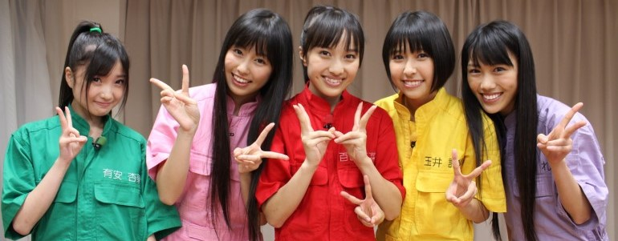
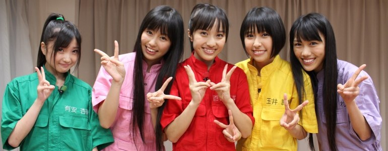
【桃草Chan（ももクロChan）】
從【テレ朝動画】起家，除了許多桃草著名節目企劃外，也重要紀錄許多活動後台花絮，2012年【テレビ朝日社長賞】受獎。
2011年5月【テレビ朝日】特別整人節目【桃草Chan Z！！（ももクロChanだZ！！）】，邀請桃草武士【（南海キャンディーズ）山里亮太】與【アンガールズ】【（メイプル超合金）安藤なつ】出演。
2012年2月【テレビ朝日】特別節目【桃草Chan ～桃色幸運草Z Channel～（ももクロChan ～ももいろクローバーZ Channel～）】出演。
2013年4月【テレビ朝日】電視台首播版開始播放，持續至2020年9月。2013年3月於【愛知．日本ガイシホール】舉辦【桃色幸運草Z JAPAN TOUR 2013「5TH DIMENSION」（ももいろクローバーZ JAPAN TOUR 2013「5TH DIMENSION」）】邀請【黒柳徹子】VTR登場公布。
2011年【桃草Chan -Momoiro Clover Channel- 決戰星期五下午六點（ももクロChan -Momoiro Clover Channel- 決戦は金曜ごご6時）】DVD-BOX發行，2015年BD發行。
2012年【桃草Chan -Momoiro Clover Channel- 五色少女起飛（ももクロChan -Momoiro Clover Channel- 飛び出す5色のジュブナイル）】DVD-BOX發行，2015年BD發行。
2014年【桃草Chan 第3彈 穿越時空的五色鬥士（ももクロChan 第3弾 時をかける5色のコンバット）】DVD與BD發行。
2015年【桃草Chan 第4彈 在這深夜★堂主終於來了！（ももクロChan 第4弾 ど深夜★番長がやって来た！）】DVD與BD發行。
2017年【桃草Chan 第5彈 晚安節目馬上開始。（ももクロChan 第5弾 こんばんようから始めよう。）】DVD與BD發行。
2014年【テレビ朝日．六本木ヒルズ SUMMER STATION】於【東京．六本木ヒルズ】公開收錄。
2015年【桃草Chan電視台播放100集紀念 公開收錄再起！！ 就說很多次了，Chan的C是大寫不是小寫 2015 春 in EX THEATER ROPPONGI（ももクロChan地上波放送100回記念 公開収録リターンズ！！ しつこいようですが、Chanの"C"は小文字じゃなくて大文字です 2015 春 in EX THEATER ROPPONGI）】於【東京．EX THEATER ROPPONGI】 、【第幾次了！公開收錄！桃草Chan in SUMMER STATION 2015 ～續集．「Chan的C是大寫不是小寫」～（なんどめだ！公開収録！ももクロChan in SUMMER STATION 2015 ～続．「Chanの"C"は小文字じゃなくて大文字です」～）】於【東京．六本木ヒルズ】公開收錄。
2015年7月【テレ朝動画「桃草Chan（ももクロChan）」】桃草武士【前山田健一】登場特別配信宣傳【桃色幸運草Z 桃神祭 2015 ECOPA體育場大會 ～額頭大神親臨～（ももいろクローバーZ 桃神祭 2015 エコパスタジアム大会 ～御額様ご来臨～）】演唱活動。
2015年12月【テレビ朝日「桃草Chan（ももクロChan）」】特別第一次直播方式宣傳【桃色聖誕 2015 〜Beautiful Survivors〜（ももいろクリスマス 2015 〜Beautiful Survivors〜）】演唱活動。
【桃草Chan副刊（別冊ももクロChan）】
2011年1月【CSテレ朝チャンネル】開始播放精華回顧版，持續至2022年3月。雖然是主節目的剪輯，但有時會有別於主節目而錄製一小段成員私底下的特別開場。
【増刊桃草Chan（増刊ももクロChan）】
【テレビ朝日】不定時特別宣傳節目。
2013年5月主要由玉井詩織、高城蕾妮、有安杏果於【埼玉．東武動物公園】負責節目宣傳。
2014年4月主要由玉井詩織與有安杏果負責節目DVD與BD宣傳。
【大談 桃草Chan24小時！！（大いに語る ももクロChan24時！！）】
【桃草Chan ～Momoiro Clover Z Channel～ 一舉放送（ももクロChan ～Momoiro Clover Z Channel～ 一挙放送）】
2016年7月【ABEMA】包含【桃草Chan（ももクロChan）】現場回憶單元與連續播放版合計24小時。
【新年到！桃草Chan4小時SP（お正月だよ！ももクロChan4時間SP）】
2017年1月【ABEMA】包含玉井詩織與佐佐木彩夏料理單元與【桃草Chan（ももクロChan）】精華版。
【桃草Chan AbemaTV外傳（ももクロChan AbemaTVスピンオフ）】
2017年4月【ABEMA】合作企劃【桃草1個月內週末宣傳！！（ももクロ1ヶ月間週末ジャック！！）】。
2010年11月～今
【川上アキラの人のふんどしでひとりふんどし】
由【テレ朝動画】播放，雖然是經紀人kwkm自肥節目，但也經常邀請桃草成員登場。
初期因來賓而更名2次，歷經【川上アキラの人のふんどしでひとり相撲】【川上アキラの人のふんどしでひとり相模】。
2016與2017年【川上アキラの人のふんどしでひとりふんどし】於【東京．六本木ヒルズ】公開收錄。
2015年1月～今
【Mステ10時間SPウルトラFES】
桃色幸運草Z參與節目【MUSIC STATION ウルトラFES】廣告宣傳。
2015年9月
【新春！！2014年 桃草SP DAY（新春！！2014年 ももクロスペシャルデー）】
由【CSテレ朝チャンネル】播放，7小時半各式桃草參與的節目與演唱活動連續播放。
2014年1月
【桃色幸運草Z 24小時大放送Z！！！（ももいろクローバーZ 24時間大放送だZ！！！）】
由【CSテレ朝チャンネル】播放，24小時各式桃草參與的節目連續播放，聯動活動【桃草夏季犯蠢主題樂園 SUMMER DIVE 2012 Tour（ももクロ夏のバカ騒ぎ SUMMER DIVE 2012 Tour）】開場前直播，2012年4月舉辦記者會。
被公開桃草武士【（南海キャンディーズ）山里亮太】參與【関西テレビ「桃草 VS 百人喪屍 SAVE（ももクロ VS 100人のゾンビ SAVE）」】演出吃到有安杏果吃剩的食物。
獲得2012年9月節目【スカパー！「スカパー！アワード 2012 授賞式」】中的【国内ドラマ．バラエティ大賞】，桃色幸運草Z VTR留言登場。
2012年6月


【鹽麴玉井詩織 × 坂崎幸之助的御台場民歌村NEXT（しおこうじ玉井詩織 × 坂崎幸之助のお台場フォーク村NEXT）】
【坂崎幸之助的桃色民歌村NEXT（坂崎幸之助のももいろフォーク村NEXT）】
由【フジテレビNEXT】播放，與【（THE ALFEE）坂崎幸之助】一起參與主持，讓桃草接觸不少曲風學習，也邀請不少歌手磨練成員，不乏一些老前輩等級；同時桃草也被要求全員基本吉他彈奏練習，最後進而學習其他樂器組成一個桃草樂團完成表演。
2015年與2016年【坂崎幸之助的桃色民歌村（坂崎幸之助のももいろフォーク村）】於【東京．国立代々木競技場第一体育館】公開收錄。
2019年7月更名【鹽麴玉井詩織 × 坂崎幸之助的御台場民歌村NEXT（しおこうじ玉井詩織 × 坂崎幸之助のお台場フォーク村NEXT）】再出發，並由【（THE ALFEE）坂崎幸之助】與玉井詩織一起參與主持。
【坂崎幸之助的桃色民歌村 Go！Go！GUITAR GIRLZ（坂崎幸之助のももいろフォーク村 Go！Go！GUITAR GIRLZ）】
2015年2月由【フジテレビNEXT】播放桃草全員基本吉他彈奏練習花絮，持續至2015年9月。
【桃色幸運草Z．坂崎幸之助 過去3年中聖誕SP一舉放送/富士電視台NEXTsmart免費（ももいろクローバーZ．坂崎幸之助 過去3年分のクリスマススペシャル一挙放送/フジテレビNEXTsmart無料）】
2016年12月【ニコニコ生放送】播放2013年～2015年聖誕SP連續播放版。
2014年9月～今
【佐田幸運 亦稱 桃色雅志Z（さだクロ もしくは ももいろマサシZ）】
由【フジテレビNEXT】播放，【桃色雅志Z】合作節目，【さだまさし】合作曲目【扶桑花（仏桑花）】【親父の一番長い日】，百田夏菜子與【さだまさし】合作曲目【主人公】，玉井詩織與【さだまさし】合作曲目【パンプキンパイとシナモンティー】，佐佐木彩夏與【さだまさし】合作曲目【19歳】，高城蕾妮與【さだまさし】合作曲目【朝刊】，有安杏果與【さだまさし】合作曲目【つゆのあとさき】。
2016年3月
【「走向全國！」桃草徒步全國的帷幕升起（「行くぞ、全国！」ももクロ全国行脚の幕が上がる）】
【「來了！讚岐！」桃草讚岐電影節的帷幕升起（「来たよ！さぬき！」ももクロさぬき映画祭の幕が上がる）】
【傳遞桃草的努力！走向全國！127場電影院見面會（ももクロの本気届けます！行くぞ全国！127館舞台挨拶）】
【出動！127場！桃草徒步全國電影院見面會最終章（行ったぞ！127館！ももクロ舞台挨拶全国行脚フィナーレ）】
由【スカパー！】播放，聯動電影【帷幕升起（幕が上がる）】。
【充滿熱情的電影「帷幕升起」！（映画「幕が上がる」のここが熱い！）】
聯動電影【帷幕升起（幕が上がる）】。
2015年2月～2015年3月
【桃色恐龍Z（ももいろダイナソーZ）】
聯動戲劇【WALKING WITH DINOSAURS】，邀請【（ココリコ）田中直樹】【カンニング竹山】【アンガールズ】主持，其中高城蕾妮外景拜訪桃草武士【所十三】。
2013年4月
【朝氣桃子丼～馬上開動！（すたもも丼～いただきやすっ！）】
由【スカパー！AT-X】播放。
2011年1月～2011年4月

【桃色鶴瓶 ～下面一位～（桃色つるべ ～お次の方どうぞ～）】
與桃草武士【笑福亭鶴瓶】一起參與主持，讓來賓扮演記者相互訪問方式磨練桃草反應與主持。
2014年10月桃草武士【笑福亭鶴瓶】舉辦記者會，桃色幸運草Z VTR登場。
2016年【桃色鶴瓶 ～下面一位～（桃色つるべ ～お次の方どうぞ～）】【桃色鶴瓶 ～下面一位～ Vol.2（桃色つるべ ～お次の方どうぞ～ Vol.2）】DVD-BOX與BD-BOX發行。
2017年【「桃色鶴瓶 ～下面一位～ Vol.2」DVD&BD販售紀念粉絲感謝活動（「桃色つるべ ～お次の方どうぞ～ Vol.2」DVD&BD発売記念ファン感謝イベント）】於【大阪．関西テレビ】公開收錄。
2015年1月～2021年3月，不定期特別節目
【桃草 VS 百人喪屍 SAVE（ももクロ VS 100人のゾンビ SAVE）】
邀請桃草武士【（南海キャンディーズ）山里亮太】與【曙】參與演出。
後續於節目【CSテレ朝チャンネル「桃色幸運草Z 24小時大放送Z！！！（ももいろクローバーZ 24時間大放送だZ！！！）」】被公開桃草武士【（南海キャンディーズ）山里亮太】吃到有安杏果吃剩的食物。
2012年6月

 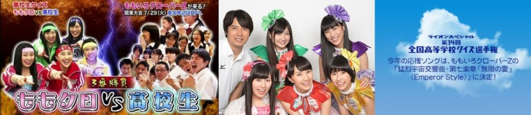
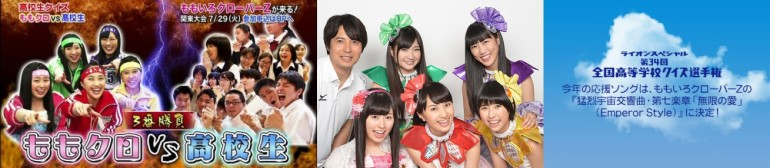


【石頭剪刀布派對（ぐーちょきぱーてぃー）】
由【Hulu】播放，小桃草Z身份，百田夏菜子擔任【太陽夏菜子醬（おひさまかなこちゃん）】，玉井詩織擔任【蒲公英詩織（たんぽぽしおりん）】，佐佐木彩夏擔任【咕咕阿玲（ぽっぽーあーりん）】，高城蕾妮擔任【RAINY蕾妮醬（れいにーれにちゃん）】，有安杏果擔任【喂喂杏果醬（もしもしももかちゃん）】，嘗試開發兒童市場。
2017年2月舉辦記者會；節目宣傳【日本テレビ「スッキリ」】。
2017年2月～今
【桃草電視購物的玉手箱Z（ももクロポシュレの玉手箱だZ）】
於【東京．日本テレビ】公開收錄，邀請【（ますだおかだ）岡田圭右】【遼河はるひ】主持，桃草深夜購物節目，聯動節目【日本テレビ「新春恒例！ポシュレオールスター初売りSP！！」】，節目宣傳【日本テレビ「PON！」】，當日節目存檔於【日テレオンデマンド】重播於【Ustream】。
2015年5月～不定期特別節目
【あいことば】
桃色幸運草Z參與節目【Oha！4】單元合作企劃，百田夏菜子推薦單曲【『Z』的誓言（『Z』の誓い）】，玉井詩織推薦【ナオト．インティライミ】【関野吉晴】對談，佐佐木彩夏推薦【浜崎あゆみ】作品【A Song for ××】，高城蕾妮推薦團體【湘南乃風】作品【覇王樹】，有安杏果推薦樂團【Mr.Children】作品【I'LL BE】。
2015年5月
【中田主播畢業SP 與桃草一起學習 日本的重點預習！（中田キャスター卒業SP ももクロと学ぶ ニッポンの大予習！）】
【與桃草一起學習「日本面臨的課題」（ももクロと学ぶ「ニッポンの宿題」）】
桃色幸運草Z參與節目【Oha！4】單元合作企劃。
2014年12月～2015年12月
【リサーチ☆小町Z】
桃色幸運草Z參與節目【Oha！4】單元【リサーチ☆小町Z】標題配音演出。
2014年10月
【ライオンスペシャル 高校生クイズ2014】
擔任官方應援隊，並且【猛烈宇宙交響曲．第七樂章「無限的愛」（Emperor Style）（猛烈宇宙交響曲．第七楽章「無限の愛」（Emperor Style））】為其應援曲。
2014年7月於【東京．潮風公園】公開收錄，聯動節目【日本テレビ「高校生Quiz 2014 桃草 & 藝人橫跨美國炒熱氣氛SP（高校生クイズ 2014 ももクロ & 芸人と盛り上がってアメリカ横断だSP）」】對戰【埼玉．栄東高等学校】 ，聯動節目【ニコニコ生放送「高校生Quiz開幕！桃草未公開片段大大大放送SP！！ ～提前全國高校Quiz祭典～（高校生クイズ開幕！ももクロ未公開映像大大大放出SP！！ ～ひと足先に全国の高校でクイズ祭り～）」】桃色幸運草Z VTR登場播出未公開片段 ，聯動節目【日本テレビ「ZIP！」「高校生クイズがついに開幕！地区大会を突破しアメリカを目指せSP」「第34回 全国高等学校クイズ選手権」】，聯動廣播【女川さいがいFM「おながわ☆なう」】，節目宣傳【日本テレビ「Oha！4」「ZIP！」「スッキリ」「PON！」「ヒルナンデス！」】。
2014年6月～2014年9月
【高校生Quiz 2014 桃草 & 藝人橫跨美國炒熱氣氛SP（高校生クイズ 2014 ももクロ & 芸人と盛り上がってアメリカ横断だSP）】
聯動節目【日本テレビ「ライオンスペシャル 高校生クイズ2014」】，邀請桃草武士【桝太一】主持，對戰【埼玉．栄東高等学校】。
聯動節目【ニコニコ生放送「高校生Quiz開幕！桃草未公開片段大大大放送SP！！ ～提前全國高校Quiz祭典～（高校生クイズ開幕！ももクロ未公開映像大大大放出SP！！ ～ひと足先に全国の高校でクイズ祭り～）」】桃色幸運草Z VTR登場播出未公開片段。
2014年6月～2014年7月
【桃草 × ZIP！ 舞蹈工作室（ももクロ × ZIP！ ダンスファクトリー）】
【日本テレビ「ZIP！」】聯動電影【悪夢ちゃん The 夢ovie】宣傳合作企劃，曲目【再會吧、那些愛憐的悲傷（サラバ、愛しき悲しみたちよ）】5日連續教學，包含【詭異桃草（きもクロ）】與桃草武士【桝太一】宣傳又跳舞。
2014年4月～2014年5月
【ロボット日本一決定戦！リアルロボットバトル】
2014年桃色幸運草Z與【（極楽とんぼ）加藤浩次】【安藤美姫】一起參與主持。
聯動節目【日本テレビ「リアルロボットバトル日本一決定戦！本番まで待てない見所SP」「ロボット日本一決定戦！リアルロボットバトルナビ」】。
2013年桃色幸運草Z與【（ツービート）ビートたけし】【所ジョージ】一起參與主持。
聯動節目【日本テレビ「超直前！日本一テレビ ～歌唱王．ワラチャン．リアルロボットバトル．頭脳王～」】。
2013年12月～2014年12月
【桃色幸運草Z緊急特別節目！桃草想在日本電視台搞事！？SP（ももいろクローバーZ緊急特番！ももクロが日テレで何かやらかすらしいぞ！？SP）】
聯動戲劇【日本テレビ「悪夢ちゃん」】主題曲【再會吧、那些愛憐的悲傷（サラバ、愛しき悲しみたちよ）】宣傳。
因2012年9月【TAKARA TOMY】玩具【Furby】廣告記者會睡過頭與【日本テレビ「悪夢ちゃん」】主題曲【再會吧、那些愛憐的悲傷（サラバ、愛しき悲しみたちよ）】記者會遲到，於節目以剃眉妝登場。
2012年10月


【桃草和樂器革命Z（ももクロ和楽器レボリューションZ）】
介紹和樂器為主題，邀請【秋鹿真人】主持，曲目【桃色太鼓咚咚小調（ももいろ太鼓どどんが節）】挑戰：百田夏菜子擔任太鼓，玉井詩織擔任津輕三味線，佐佐木彩夏擔任和琴，高城蕾妮擔任篠笛，有安杏果擔任尺八。
2016年11月
【グレートトラバース】
由【NHK BSプレミアム】播放，擔任官方應援隊，同時長時間以來賓身分登場。
2016年【グレートトラバース2 ～日本二百名山一筆書き踏破～】DVD發行。
2015年6月～2016年2月
【奇蹟的合作！火力全開！KISS&桃草（奇跡のコラボ！パワー全開！KISS&ももクロ）】
由【NHK BSプレミアム】播放，單曲【在夢之浮世盛開吧（夢の浮世に咲いてみな）】宣傳合作企劃。
2014年12月
【這是桃草！只有這裡能看『天使JUMP』配信預告！（ももクロの！ここでしか見られない『天使とジャンプ』配信予告メッセージ！）】
由【NHKオンデマンド】播放，聯動戲劇【NHK「天使JUMP（天使とジャンプ）」】宣傳。
【Twinkle5的秘密 ～天使們下凡的軌跡～（Twinkle5のひみつ ～地上に舞い降りた天使たちの軌跡～）】【「天使JUMP」全解析 ～桃草 戲劇初挑戰～（「天使とジャンプ」のすべて ～ももクロ ドラマ初挑戦～）】
聯動戲劇【NHK「天使JUMP（天使とジャンプ）」】宣傳。
2013年12月
【毎日PR！紅白】
桃色幸運草Z參與節目【第64回 NHK紅白歌合戦】廣告宣傳。
2013年12月

【桃草團（ももクロ団）】【桃草團 × BOT（ももクロ団 × BOT）】
包含許多桃草著名節目企劃，2011年9月改由高城蕾妮與有安杏果以【事務所請幫推小隊（事務所に推され隊）】為主要負責節目，並轉換為【桃草團 × BOT（ももクロ団 × BOT）】，其中BOT的涵義為【BOSS】【推され隊】音譯的縮寫。
2012年【桃草團 全力彙整導演剪輯版 Vol.1（ももクロ団 全力凝縮ディレクターズカット版 Vol.1）】【桃草團 全力彙整導演剪輯版 Vol.2（ももクロ団 全力凝縮ディレクターズカット版 Vol.2）】【桃草團 全力彙整導演剪輯版 Vol.3（ももクロ団 全力凝縮ディレクターズカット版 Vol.3）】 【桃草團 全力彙整導演剪輯版 Vol.4（ももクロ団 全力凝縮ディレクターズカット版 Vol.4）】【桃草團 全力彙整導演剪輯版 Vol.5（ももクロ団 全力凝縮ディレクターズカット版 Vol.5）】BD發行。
2013年【桃草團 全力彙整導演剪輯版（ももクロ団 全力凝縮ディレクターズカット版）】DVD-BOX發行，【桃草團 × BOT（ももクロ団 × BOT）】DVD-BOX與BD-BOX發行。
【桃草團一舉放送（ももクロ団一挙放送）】
2012年6月【CS TBSチャンネル】開始連續播放版，持續至2012年11月。
2012年1月～2012年12月


【HOT WAVE 桃色幸運草Z 尾牙SP！「埼玉電視台 × 桃草 4DAYS！！！！」（HOT WAVE ももいろクローバーZ 忘年会スペシャル！「テレ玉 × ももクロ 4DAYS！！！！」）】
節目【HOT WAVE】、電影（宣傳片）【初遇桃草（はじめてのももクロ）】、【第一回 桃去桃來「帶著笑顔的未来」（第一回 ゆく桃くる桃「笑顔ある未来」）】演唱活動直播、節目宣傳【What is 桃草？（What is ももクロ？）】。
【What is 桃草？（What is ももクロ？）】亦聯動節目宣傳【フジテレビNEXT、サンテレビ、岐阜放送、KBS京都、千葉テレビ、とちぎテレビ、仙台放送、九州朝日放送、三重テレビ、テレビ静岡、南日本放送、北日本放送、中国放送、熊本放送、群馬テレビ、山口朝日放送、日本海テレビ、北海道テレビ】。
2015年12月～2016年1月
【埼玉電視台 × 桃色幸運草Z 3DAYS！！！（テレビ埼玉 × ももいろクローバーZ 3DAYS！！！）】
節目【HOT WAVE】【V-Clips】與【WHITE HOT BLIZZARD MOMOIRO CHRISTMAS 2013 ～美麗的極寒世界～（WHITE HOT BLIZZARD MOMOIRO CHRISTMAS 2013 ～美しき極寒の世界～）】演唱活動直播。
2013年12月


【月刊 桃色幸運草Z（月刊 ももいろクローバーZ）】
2011年7月


【桃草俱樂部xoxo（ももクロくらぶxoxo）】
公開許多桃草第一手情報。
2012年單曲【再會吧、那些愛憐的悲傷（サラバ、愛しき悲しみたちよ）】企劃活動【桃草放送室宣傳？！ ～新曲於學校宇宙初解禁Z～！！！（ももクロが放送室ジャック？！ ～学校で新曲を宇宙初解禁しちゃうんだZ～！！！）】，並於【神奈川．横浜市立吉田中学校】舉辦【放送室宣傳真心不騙？！到中學驚喜訪問！！（本当に放送室ジャック？！中学校にサプライズ訪問！！）】演唱活動。
2013年舉辦【日本放送 桃色幸運草Z 桃草俱樂部xoxo ～Valentine DE NIGHT～Z！（ニッポン放送 ももいろクローバーZ ももクロくらぶxoxo ～バレンタイン DE NIGHT だぁ～Z！）】，並於會場限定【桃色幸運草Z的All Night Nippon Mobile總集篇 Vol.2（ももいろクローバーZのオールナイトニッポンモバイル総集編 Vol.2）】CD販售，【滿載「桃草」私底下對話USB「私密錄音帶～Ura ShaBeri～」（「ももクロ」の裏トーク満載のUSB入り「裏カセット～Ura ShaBeri～」）】USB販售。
2013年【民放ラジオ統一キャンペーン「ラジオがやってくる！」】於【東京．住吉小学校】演唱活動與公開收錄。
2013年【ニッポン放送「ラジオパーク in 日比谷 2013 ～緑と、家族と、音楽と～」】於【東京．日比谷公園】公開收錄。
2014年舉辦【日本放送開台60週年紀念 桃色幸運草Z 桃草俱樂部xoxo ～Valentine DE NIGHT～Z！ 2014（ニッポン放送開局60周年記念 ももいろクローバーZ ももクロくらぶxoxo ～バレンタイン DE NIGHT だぁ～Z！ 2014）】，並於會場限定【桃色幸運草Z的All Night Nippon Mobile總集篇 Vol.3（ももいろクローバーZのオールナイトニッポンモバイル総集編 Vol.3）】CD販售，【滿載「桃草」私底下對話USB「私密錄音帶～Ura ShaBeri II～」（「ももクロ」の裏トーク満載のUSB入り「裏カセット～Ura ShaBeri II～」）】USB販售。
2015年舉辦【桃色幸運草Z 桃草俱樂部xoxo ～Valentine DE NIGHT～Z！ 2015（ももいろクローバーZ ももクロくらぶxoxo ～バレンタイン DE NIGHT だぁ～Z！ 2015）】，並於會場限定【桃色幸運草Z的All Night Nippon Mobile總集篇 Vol.4（ももいろクローバーZのオールナイトニッポンモバイル総集編 Vol.4）】CD販售，【滿載「桃草」私底下對話USB「私密錄音帶～Ura ShaBeri III～」（「ももクロ」の裏トーク満載のUSB入り「裏カセット～Ura ShaBeri III～」）】USB販售。
2016年舉辦【桃色幸運草Z 桃草俱樂部xoxo ～Valentine DE NIGHT～Z！ 2016（ももいろクローバーZ ももクロくらぶxoxo ～バレンタイン DE NIGHT だぁ～Z！ 2016）】，並於會場限定【滿載「桃草」私底下對話USB「私密錄音帶～Ura ShaBeri IV～」（「ももクロ」の裏トーク満載のUSB入り「裏カセット～Ura ShaBeri IV～」）】USB販售。
2017年舉辦【桃色幸運草Z 桃草俱樂部xoxo ～Valentine DE NIGHT～Z！ 2017 「秘密」（ももいろクローバーZ ももクロくらぶxoxo ～バレンタイン DE NIGHT だぁ～Z！ 2017 「裏」）】【桃色幸運草Z 桃草俱樂部xoxo ～Valentine DE NIGHT～Z！ 2017 「公開」（ももいろクローバーZ ももクロくらぶxoxo ～バレンタイン DE NIGHT だぁ～Z！ 2017 「表」）】，並於會場限定【滿載「桃草」私底下對話USB「私密錄音帶～Ura ShaBeri IV～」（「ももクロ」の裏トーク満載のUSB入り「裏カセット～Ura ShaBeri V～」）】USB販售。
2012年4月～今
【事務所請幫推小隊的All Night Nippon R（事務所に推され隊のオールナイトニッポンR）】
2015年於【神奈川．センテニアルホール】公開收錄，高城蕾妮與有安杏果參與主持，百田夏菜子、玉井詩織、佐佐木彩夏來賓登場，並於會場限定【桃色幸運草Z的All Night Nippon Mobile總集篇 Vol.4（ももいろクローバーZのオールナイトニッポンモバイル総集編 Vol.4）】CD販售，【滿載「桃草」私底下對話USB「私密錄音帶～Ura ShaBeri III～」（「ももクロ」の裏トーク満載のUSB入り「裏カセット～Ura ShaBeri III～」）】USB販售。
2015年2月
【ニッポン放送開局60周年記念】
為廣播【ニッポン放送】開台60週年紀念活動，包含紀念曲【難以忘懷的音樂（忘れられぬミュージック）】，邀請多名知名歌手參與錄製，和【松任谷由実】【大原櫻子】與樂團【ゆず】【back number】合作演唱。
2014年7月廣播【ニッポン放送「ニッポン放送開局60周年記念 ラジオで聴いた「忘れられぬミュージック」」】；11月於【神奈川．横浜アリーナ】舉辦【ニッポン放送開局60周年記念「オールナイトニッポン Radio Live 忘れられぬミュージック」】演唱活動，官方小冊子隨附【難以忘懷的音樂（忘れられぬミュージック）】音樂CD，聯動廣播【ニッポン放送「オールナイトニッポンGOLD 忘れられぬミュージックスペシャル」】。
2014年7月～2014年11月
【桃色幸運草Z kwkm的All Night Nippon R（ももいろクローバーZ 川上アキラのオールナイトニッポンR）】
2014年於【神奈川．センテニアルホール】公開收錄，並於會場限定【桃色幸運草Z的All Night Nippon Mobile總集篇 Vol.3（ももいろクローバーZのオールナイトニッポンモバイル総集編 Vol.3）】CD販售，【滿載「桃草」私底下對話USB「私密錄音帶～Ura ShaBeri II～」（「ももクロ」の裏トーク満載のUSB入り「裏カセット～Ura ShaBeri II～」）】USB販售。
2016年於【東京．科学技術館】公開收錄，並於會場限定【滿載「桃草」私底下對話USB「私密錄音帶～Ura ShaBeri IV～」（「ももクロ」の裏トーク満載のUSB入り「裏カセット～Ura ShaBeri IV～」）】USB販售。
2014年2月～2016年3月
【桃色幸運草Z的All Night Nippon（ももいろクローバーZのオールナイトニッポン）】
2012年【「第63回 NHK紅白歌合戦」出場歌手発表会】聯動廣播。
2014年首次廣播深夜公開收錄全員到齊，含【Ustream】直播。
2016年，含【LINE LIVE】直播。
2017年於【東京．ニッポン放送】公開收錄，參與救援【（ナインティナイン）岡村隆史】清庫存事件限定入場，含【Ustream】直播。
2012年11月後不定期
【桃色幸運草的All Night Nippon Mobile（ももいろクローバーのオールナイトニッポンモバイル）】
2012年【ミューコミ＋プラス presents ミューフェス 2012 ～Spring～ ライブ1000本観戦アナ吉田のサブカル全部乗せ！】會場限定【桃色幸運草Z的All Night Nippon Mobile總集篇 Vol.1（ももいろクローバーZのオールナイトニッポンモバイル総集編 Vol.1）】CD販售。
由【オールナイトニッポンモバイル】播放。
2010年11月～2011年10月
【桃色幸運草Z的SUZUKI HAPPY♧CLOVER！TOP10（ももいろクローバーZのSUZUKI ハッピー♧クローバー！TOP10】
【桃色幸運草Z的SUZUKI HAPPY♧CLOVER！（ももいろクローバーZのSUZUKI ハッピー♧クローバー！）】
邀請【清野茂樹】助理主持，由【SUZUKI】贊助，桃草各種學習單元，同時也會公開桃草第一手情報。
2021年10月更名【桃色幸運草Z的SUZUKI HAPPY♧CLOVER！TOP10（ももいろクローバーZのSUZUKI ハッピー♧クローバー！TOP10）】邀請【藤田太郎】助理主持再出發，成為音樂主題節目。
2016年【桃色幸運草Z的SUZUKI HAPPY♧CLOVER！（ももいろクローバーZのSUZUKI ハッピー♧クローバー！）】於【新潟．リバーサイド千秋】公開收錄。
2017年【桃色幸運草Z的SUZUKI HAPPY♧CLOVER！（ももいろクローバーZのSUZUKI ハッピー♧クローバー！）】於【大阪．湊町リバープレイス】公開收錄。
2015年12月～今
 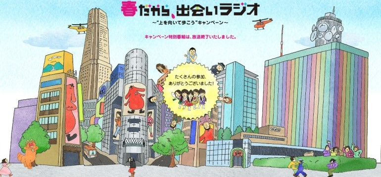
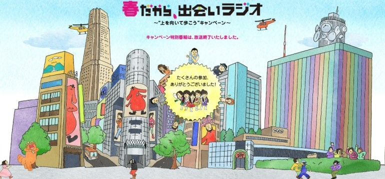


【桃草的LET'S LISTENING TIME！（ももクロちゃんのLET'S LISTENING TIME！）】
2010年6月
【有安杏果 心之筆記 ～從橫濱體育館至日本武道館的奇蹟～『心之旋律 ～feel a heartbeat～ Vol.1.5』OFFICIAL LIVE PAMPHLET（有安杏果 ココロノート ～横浜アリーナから日本武道館までのキセキ～『ココロノセンリツ ～feel a heartbeat～ Vol.1.5』OFFICIAL LIVE PAMPHLET）】
2017年10月
【AYAKA-NATION 2017 OFFICIAL PAMPHLET A-RIN magazine】
2017年8月
【桃草夏季犯蠢主題樂園 2017 -FIVE THE COLOR Road to 2020- 味之素體育場大會（ももクロ夏のバカ騒ぎ 2017 -FIVE THE COLOR Road to 2020- 味の素スタジアム大会）】
2017年8月
【有安杏果『心之旋律 ～feel a heartbeat～ Vol.1』OFFICIAL LIVE PAMPHLET（有安杏果『ココロノセンリツ ～feel a heartbeat～ Vol.1』OFFICIAL LIVE PAMPHLET）】
2017年6月～2017年7月
【給你蕾妮醬全貌（まるごとれにちゃん）】
2017年3月
【桃色聖誕 2016 〜隆冬的燦爛夏日時光〜（ももいろクリスマス 2016 〜真冬のサンサンサマータイム〜）】
2016年12月
【有安杏果『心之旋律 ～feel a heartbeat～ Vol.0.5』OFFICIAL LIVE PAMPHLET（有安杏果『ココロノセンリツ ～feel a heartbeat～ Vol.0.5』OFFICIAL LIVE PAMPHLET）】
2016年11月
【百田夏菜子 & 玉井詩織『百田玉井婚禮』OFFICIAL LIVE PAMPHLET（百田夏菜子 & 玉井詩織『ももたまい婚』OFFICIAL LIVE PAMPHLET）】
2016年9月
【桃神祭 2016 ～鬼島～（桃神祭 2016 ～鬼ヶ島～）】
2016年8月
【有口皆碑夢樂笑喜共和國 ～充滿歡笑聲的地方武士多～（さくさく夢楽咲喜共和国 ～笑う門にはノフ来る～）】
封面邀請桃草武士【所十三】設計。
2016年3月
【MOMOIRO CLOVER Z DOME TREK 2016 「AMARANTHUS」】【MOMOIRO CLOVER Z DOME TREK 2016 「白金的黎明」（MOMOIRO CLOVER Z DOME TREK 2016 「白金の夜明け」）】
2016年2月～2016年4月
【桃色聖誕 2015 〜Beautiful Survivors〜（ももいろクリスマス 2015 〜Beautiful Survivors〜）】
2015年12月
【桃神祭 2015 ECOPA體育場大會（桃神祭 2015 エコパスタジアム大会）】
2015年7月～2015年8月
【高城的60分鐘4回合對抗（高城の60分4本勝負）】
封面邀請桃草武士【所十三】設計。
2015年3月
【桃色聖誕 2014 埼玉超級競技場大會 ～Shining Snow Story～（ももいろクリスマス 2014 さいたまスーパーアリーナ大会 ～Shining Snow Story～）】
2014年12月
【桃草夏季犯蠢主題樂園 2014 日產體育場大會 ～桃神祭～（ももクロ夏のバカ騒ぎ 2014 日産スタジアム大会 ～桃神祭～）】
2014年7月
【桃草春季幹大事 2014 國立競技場大會 ～NEVER ENDING ADVENTURE 迎向夢想彼端～（ももクロ春の一大事 2014 国立競技場大会 ～NEVER ENDING ADVENTURE 夢の向こうへ～）】
2014年3月
【桃色聖誕 2013 美麗的極寒世界（ももいろクリスマス 2013 美しき極寒の世界）】
2013年12月
【桃草夏季犯蠢主題樂園 WORLD SUMMER DIVE 2013（ももクロ夏のバカ騒ぎ WORLD SUMMER DIVE 2013）】
2013年7月～2013年8月
【桃色聖誕 2012 King of Live（ももいろクリスマス 2012 King of Live）】
2012年12月
【桃草夏季犯蠢主題樂園 SUMMER DIVE 2012 Tour（ももクロ夏のバカ騒ぎ SUMMER DIVE 2012 Tour）】
2012年6月～2012年8月


【孩子快樂發展自己特色的方法（自分のカラーで子どもを笑顔にする方法）】
連載型，小桃草Z身份，聯動節目【Hulu「石頭剪刀布派對（ぐーちょきぱーてぃー）」】。
2017年9月～2018年1月
【桃草獨創記錄 桃色幸運草Z公式記者深入報導 2016～2017（ももクロ独創録 ももいろクローバーZ公式記者インサイド．レポート 2016～2017）】
整合【BUBKA】連載的作品。
2017年7月
【桃草道（ももクロ道）】
經紀人kwkm自肥作品，2016年11月玉井詩織、佐佐木彩夏、經紀人kwkm於【千葉．イオンモール幕張新都心】見面會，前期先以【桃草流2（暫定）（ももクロ流2（仮））】公開；2017年3月百田夏菜子與經紀人kwkm於【大阪．天王寺ミオ】見面會。
2016年12月
【Ayaka Sasaki】
佐佐木彩夏個人作品。
2016年9月
【桃草演唱記錄 桃色幸運草Z公式記者深入報導 2015～2016（ももクロ吟遊録 ももいろクローバーZ公式記者インサイド．レポート 2015～2016）】
整合【BUBKA】連載的作品。
2016年8月
【心之旋律♪（ココロノセンリツ♪）】
有安杏果個人作品。
2016年6月
【桃草圖文記錄（ももクロ画談録）】
2016年於【埼玉．西武プリンスドーム】舉辦【MOMOIRO CLOVER Z DOME TREK 2016 "AMARANTHUS / 白金的黎明"（MOMOIRO CLOVER Z DOME TREK 2016 "AMARANTHUS / 白金の夜明け"）】演唱活動先行販售。
整合【BUBKA】連載的作品，與桃草武士【所十三】【（氣志團）綾小路翔】合作，封面邀請桃草武士【所十三】設計，2016年4月桃草武士【所十三】與tmmn於【東京．HMVエソラ池袋】見面會。
2016年4月
【桃草臨場記錄 桃色幸運草Z公式記者深入報導 2013～2015（ももクロ見聞録 ももいろクローバーZ公式記者インサイド．レポート 2013～2015）】
整合【BUBKA】連載的作品，2015年9月百田夏菜子於【福岡．JR博多シティ、岩手．宮沢賢治童話村、愛知．Zepp名古屋】見面會。
2015年8月～2015年9月
【Momoiro Clover Film Z 電影『帷幕升起』 桃色幸運草Z 公式寫真書（Momoiro Clover Film Z 映画『幕が上がる』 ももいろクローバーZ オフィシャル．フォトブック）】
配合電影【帷幕升起（幕が上がる）】作品。
2015年2月
【桃草流 ～與5人教學相長的過程～（ももクロ流 ～5人へ伝えたこと 5人から教わったこと～）】
經紀人kwkm自肥作品，2014年6月於【群馬．LABI1高崎】玉井詩織與經紀人kwkm舉辦對談活動，同時宣傳書報【Quick Japan Vol.114】，含【Ustream】直播。
2014年6月
【桃草點滴記錄 桃色幸運草Z公式記者追蹤報導 2011～2013（ももクロ活字録 ももいろクローバーZ公式記者追っかけレポート 2011～2013）】
整合【BUBKA】連載的作品。
2013年8月
【桃色幸運草Z 戀愛制服（ももいろクローバーZ 恋する制服）】
配合戲劇【桃子連續劇（ももドラ）】作品。
2011年於【埼玉．さいたまスーパーアリーナ】舉辦【桃色聖誕 2011 埼玉超級競技場大會（ももいろクリスマス 2011 さいたまスーパーアリーナ大会）】演唱活動先行販售寫真書，2012年正式販售。
2011年12月～2012年1月
【桃子本 ～桃色幸運草公式寫真書～（もも本 ～ももいろクローバー公式ビジュアルブック～）】
2011年2月


【坂崎幸之助的桃色民歌村NEXT 各別徒弟面談（坂崎幸之助のももいろフォーク村NEXT 個別師弟面談）】
連載型，與【（THE ALFEE）坂崎幸之助】合作，聯動節目【フジテレビNEXT「坂崎幸之助的桃色民歌村NEXT（坂崎幸之助のももいろフォーク村NEXT）」】。
2016年12月～2017年5月


【桃色幸運草Z「偶像道場」（ももいろクローバーZ「アイドル道場」）】
2014年12月於【B.L.T.】開始連載，持續至2015年1月。
【川上道場】
2013年1月於【B.L.T.】開始連載，持續至2014年11月。
2013年1月～2015年1月
【桃色幸運草Z 日曆 2013 公主幸運草（ももいろクローバーZ 日めくりカレンダー 2013 姫クロ）】
2012年10月～2012年12月
【出没注意】
於【B.L.T.】連載，前期企劃百田夏菜子主要負責換裝拍攝。
2011年6月～2012年12月

【桃年史 2011-2012 全力少女飛奔於秋冬春夏（ももクロニクル 2011-2012 全力少女が駆けぬけた秋冬春夏）】
【桃年史 2012-2013 全力少女飛奔於秋冬春夏（ももクロニクル 2012-2013 全力少女が駆けぬけた秋冬春夏）】
【桃草Chan（ももクロChan）】公式書發行。
2014年11月
【桃年史 1 全力少女飛奔於秋冬春夏（ももクロニクル 1 全力少女が駆けぬけた秋冬春夏）】
【桃草Chan（ももクロChan）】公式書發行。
2012年11月
【『桃草Chan』Presents 桃草七回合試練對抗 2012（『ももクロChan』Presents ももクロ試練の七番勝負 2012）】
2012年於【東京．東京キネマ倶楽部】舉辦【『桃草Chan』Presents 桃草七回合試練對抗 epsode.2（『ももクロChan』Presents ももクロ試練の七番勝負 epsode.2）】的作品。
2012年4月
【『桃草Chan』Presents 十回合試練對抗 週末女主角 桃色幸運草Z（『ももクロChan』Presents 試練の十番勝負 週末ヒロイン ももいろクローバーZ）】
2011年於【東京．東京キネマ倶楽部、東京．DUO MUSIC EXCHANGE、東京．日比谷野外音楽堂】舉辦【『桃草Chan』Presents 桃草七回合試練對抗（『ももクロChan』Presents ももクロ試練の七番勝負）】，再補上第八回合來賓【川上アキラ】；第九回合來賓【佐々木敦規】；第十回合來賓【（スマイレージ）和田彩花】。
2011年9月


【Quick Japan Special Issue 桃色幸運草Z ～Compass of the dream～ 2013-2014（Quick Japan Special Issue ももいろクローバーZ ～Compass of the dream～ 2013-2014）】
2014年於【埼玉．西武ドーム】舉辦【公式粉絲俱樂部「ANGEL EYES」限定活動「想來就來！ ～只限需有專屬白色貝雷帽♡～」（公式ファンクラブ「ANGEL EYES」限定イベント「誰でもカモ～ン！ ～ただし、ホワイトベレーの方に限ります♡～」）】會員限定演唱活動先行販售。
2014年4月
【桃草PIA（ももクロぴあ）】
vol.2特典含未來活動【高城蕾妮首場音樂會 20XX 高城的逆襲！！！ ～茄子也不錯～（暫定）（高城れにファーストコンサート 20XX 高城の逆襲！！！ ～ナスだっていいじゃん～（仮））】參加入場券抽獎，並於2015年【高城的60分鐘4回合對抗（高城の60分4本勝負）】高城蕾妮個人演唱活動兌現。
vol.1合作特典含票卡夾。

【桃色☆死鬥（ももいろ☆デスマッチ）】
連載型。
2012年6月～2013年1月
【朝著桃色幸運草Z追蹤報導的方向跨越（ももいろクローバーZ追っかけレポートの向こう側）】
2014年9月開始連載。
【桃色幸運草Z追蹤報導（ももいろクローバーZ追っかけレポート）】
2012年1月開始連載，持續至2014年8月。
2012年1月～2017年10月

【娛樂消息！！（エンタメ発見マガジン！！）】
連載型。
2010年9月～2012年9月

【桃色運動（ももスポ）】
連載型。
2010年8月～2011年2月
【桃草蛋糕條（ももクロスティックケーキ）】
2017年演唱活動【桃草春季幹大事 2017 in 富士見市 ～笑顏的力量 思緒相連～（ももクロ春の一大事 2017 in 富士見市 ～笑顔のチカラ つなげるオモイ～）】合作企劃。
2017年4月
【紫色拳擊Z（紫パンチだぁ〜Z）】
【蕾妮多蜜醬汁（れにグラスンース）】
2016年於【千葉．幕張メッセイベントホール】舉辦【桃色聖誕 2016 〜隆冬的燦爛夏日時光〜（ももいろクリスマス 2016 〜真冬のサンサンサマータイム〜）】演唱活動合作企劃。
2016年12月
【『高城蕾妮の週末桃草☆拳擊』節目開始播放紀念菜單（『高城れにの週末ももクロ☆パンチ』番組放送開始記念メニュー）】
聯動廣播【文化放送「高城蕾妮の週末桃草☆拳擊！！（高城れにの週末ももクロ☆パンチ！！）」】。
2016年11月
【「愛的SKAL」 × 桃草 ＝ 「愛的應援手勢」（白桃口味）（「愛のスコール」 × ももクロ ＝ 「愛の手シュプレヒコール」（白桃味））】
2015年演唱活動【桃色幸運草Z 桃神祭 2015 ECOPA體育場大會 ～額頭大神親臨～（ももいろクローバーZ 桃神祭 2015 エコパスタジアム大会 ～御額様ご来臨～）】【桃色幸運草Z 桃神祭 2015 ECOPA體育場大會 ～遠州大狂歡～（ももいろクローバーZ 桃神祭 2015 エコパスタジアム大会 ～遠州大騒儀～）】合作企劃。
2015年7月
【北海道奇遇記 詩織最超值！玉手箱（ひょいと北海道 しおりんのよくばり！玉手箱）】
聯動節目【日本テレビ「桃草電視購物的玉手箱Z（ももクロポシュレの玉手箱だZ）」】，2015年第一彈：【北海道】名產合作企劃（玉井詩織）。
2015年5月
【玉井詩織最愛咖哩 咖哩戰隊 附湯組合（玉井詩織のカレー大好き カレンジャー スープセット）】
聯動節目【日本テレビ「桃草電視購物的玉手箱Z（ももクロポシュレの玉手箱だZ）」】，2015年第一彈：北海道【五島軒】產品【カレンジャー スープセット】合作企劃（玉井詩織）。
2015年5月
【沖縄大輪環！屬於我們的沖縄組合（おきなわ大きな輪！あなたと私の沖縄セット）】
聯動節目【日本テレビ「桃草電視購物的玉手箱Z（ももクロポシュレの玉手箱だZ）」】，2015年第一彈：【沖縄】名產合作企劃（高城蕾妮）。
2015年5月
【蕾妮紅芋塔（れに芋たると）】
聯動節目【日本テレビ「桃草電視購物的玉手箱Z（ももクロポシュレの玉手箱だZ）」】，2015年第一彈：沖縄【御菓子御殿】產品【生の紅いもタルト】合作企劃（高城蕾妮）。
2015年5月

【米久 × 帷幕升起（yonekyu × 幕が上がる）】
與米久產品合作廣告，並且【Link Link】為其廣告曲，聯動電影【帷幕升起（幕が上がる）】宣傳，其他抽獎獎項包含【帷幕升起T恤（幕が上がるTシャツ）】【帷幕升起QUO卡（幕が上がるQUOカード）】等。
【小幸運香腸（ごてあらクローバーポー）】
與米久產品合作廣告第二波，演出曲目【放學後來根腸（放課後のポー）】，聯動活動【桃色聖誕 2015 〜Beautiful Survivors〜（ももいろクリスマス 2015 〜Beautiful Survivors〜）】參加入場券抽獎，其他抽獎獎項包含【小幸運香腸 手模叉子5色組（ごてあらクローバーポー 手形フォーク5本セット）】【原創QUO卡（オリジナルQUOカード）】【原創文件夾（オリジナルクリアファイル）】等。
與米久產品合作廣告第三波，演出曲目【熱情的腸（ポーの熱情）】，聯動活動【桃神祭 2016 ～鬼島～（桃神祭 2016 ～鬼ヶ島～）】參加入場券抽獎，其他抽獎獎項包含【小香腸！！原創QUO卡（ごてあらポー！！オリジナルQUOカード）】【小香腸！！桃草限定設計原創T恤（ごてあらポー！！ももクロ限定デザインオリジナルTシャツ）】等。
【御殿場高原 あらびきポーク】
與米久產品合作廣告第四波，並且【The Golden History（ザ．ゴールデン．ヒストリー）】為其廣告曲。
2015年2月～2016年9月


【桃草巧克力威化餅（ももクロマンチョコ）】
內含20種桃草【Z傳說 ～永無止境的革命～（Z伝説 ～終わりなき革命～）】【猛烈宇宙交響曲．第七樂章「無限的愛」（猛烈宇宙交響曲．第七楽章「無限の愛」）】【再會吧、那些愛憐的悲傷（サラバ、愛しき悲しみたちよ）】造型聯名【聖魔大戰（ビックリマン）】貼紙，，外加2種隱藏版。
2013年9月～2013年11月
【pop'n bubble＜桃草＞（ポップンバブル＜ももクロ＞）】
LOTTE泡泡糖合作企劃，其中抽獎獎項【撒嬌人型（あまえんぼ人形）】邀請桃草武士【小城徹也】設計。
2013年6月～2014年1月
【桃色幸運草Z Valentine SP入場券抽獎活動（ももいろクローバーZ バレンタインスペシャルイベント入場券プレゼントキャンペーン）】
於FamilyMart購買LOTTE零食參加2013年2月於【東京．東京国際フォーラム】舉辦【日本放送 桃色幸運草Z 桃草俱樂部xoxo ～Valentine DE NIGHT～Z！（ニッポン放送 ももいろクローバーZ ももクロくらぶxoxo ～バレンタイン DE NIGHT だぁ～Z！）】入場券抽獎。
2013年1月
【Fit's】
與LOTTE口香糖合作，【佐々木希】【渡辺直美】共演。
2017年與LOTTE口香糖合作，【2年F組Fit's組】將桃色幸運草Z曲目【奔馳吧！（走れ！）】翻唱其廣告曲
2012年6月～2017年2月
【桃色幸運草爽（ももいろクローバー爽）】
與LOTTE【爽】冰淇淋合作，並且【PUSH】為其廣告曲，2012年4月舉辦記者會，邀請桃草武士【（南海キャンディーズ）山里亮太】主持。
【長友佑都】【澤穂希】【宮間あや】共演。另外配合奧運宣傳，部分廣告代表色佐佐木彩夏轉換藍色系服飾，而高城蕾妮轉換黑色系服飾。
百田夏菜子特別遠征【義大利】交流【長友佑都】。
2012年6月於【宮城．仙台市立折立中学校】舉辦【前往你的學校應援吧！（あなたの学校に応援しに行っちゃうぞ！）】演唱活動；7月聯動東日本大地震特別節目【仙台放送「ともに」】廣告，於【東京．日本大学豊山高校】舉辦【前往你的學校應援吧！（あなたの学校に応援しに行っちゃうぞ！）】演唱活動，交流因升學將解散的桃草武士團體【護國寺幸運草Z（ごこくじクローバーZ）】，桃草武士團體【護國寺幸運草Z（ごこくじクローバーZ）】合作曲目【Chai Maxx】。
與LOTTE【爽】冰淇淋合作第二波，聯動LOTTE製作App【爽快！桃草紙蓋上的Tour（爽快！ももクロフタの上ツアー）】AR演唱活動，演出曲目【我的冰淇淋（アタシハアイス）】（4月官網先行配信，作詞．作曲：嵐田光），單元網路節目【桃草爽快！3秒！？Cooking！！（ももクロの爽快！3秒！？クッキング！！）】。
2012年4月～2013年7月


【桃色幸運草Zero LIVE ～百事健康又Zero卡路里Z！～（ももいろクローバーZero LIVE ～ペプシはトクホもZeroカロリーなんだZ！～）】
2013年合作企劃購買百事可樂產品【ペプシ スペシャル】參加入場券抽獎，當日總共玩了4次【Chai Maxx】。
【スペシャル】
以【桃色幸運草Zero】自稱，【武田鉄矢】【ダウンタウン】共演。
購買百事可樂產品【スペシャル】參加2014年1月於【埼玉．コミュニティアリーナ】舉辦【桃色幸運草Zero LIVE ～百事健康又Zero卡路里Z！～（ももいろクローバーZero LIVE ～ペプシはトクホもZeroカロリーなんだZ！～）】入場券抽獎。
2013年8月～2014年1月


【ブームは違和感から ～PINK HOUSE 35th anniversary～】
擔任模特兒，並於【東京．伊勢丹新宿店、愛知．名古屋栄三越、福岡．岩田屋本店】舉辦活動登場。
2017年9月～2017年10月

【桃草 × adidas NEO LABEL 運動套裝（ももクロ × adidas NEO LABEL ジャージ上下セット）】
聯動節目【日本テレビ「桃草電視購物的玉手箱Z（ももクロポシュレの玉手箱だZ）」】，2015年第一彈：【adidas】產品【NEO LABEL ジャージ上下セット】合作企劃（百田夏菜子）。
【桃草 × adidas NEO LABEL 後背包（ももクロ × adidas NEO LABEL リュック）】
聯動節目【日本テレビ「桃草電視購物的玉手箱Z（ももクロポシュレの玉手箱だZ）」】，2015年第一彈：【adidas】產品【NEO LABEL リュック】合作企劃（佐佐木彩夏），2016年再彈改版。
【リストストラップ】
聯動節目【日本テレビ「桃草電視購物的玉手箱Z（ももクロポシュレの玉手箱だZ）」】，2015年第一彈：【adidas】產品【NEO LABEL ジャージ上下セット】合作企劃（百田夏菜子）與【NEO LABEL リュック】合作企劃（佐佐木彩夏）特典送【adidas】手腕帶。
2015年5月～2016年8月
【蕾妮醬設計成員頭像插畫吊飾（れにちゃん作メンバー似顔絵マースストラップ）】
聯動節目【日本テレビ「桃草電視購物的玉手箱Z（ももクロポシュレの玉手箱だZ）」】，2015年第一彈：【沖縄】名產與【御菓子御殿】產品【生の紅いもタルト】合作企劃（高城蕾妮）特典送吊飾。
2015年5月


【格言T恤馬上送！桃草 × B.L.T.定期訂閱活動（格言Tシャツがもれなくもらえる！ももクロ × B.L.T.定期購読キャンペーン）】
格言設計參考2014年10月合作企劃【桃色幸運草Z 日曆 2015 公主幸運草（ももいろクローバーZ 日めくりカレンダー 2015 姫クロ）】。
2014年12月～2015年1月
格言設計參考2013年10月合作企劃【桃色幸運草Z 日曆 2014 公主幸運草（ももいろクローバーZ 日めくりカレンダー 2014 姫クロ）】。
2013年12月～2014年1月
格言設計參考2012年10月合作企劃【桃色幸運草Z 日曆 2013 公主幸運草（ももいろクローバーZ 日めくりカレンダー 2013 姫クロ）】。
2012年11月～2013年1月


【PJ Message T】
第零波，引用【粉紅瓊斯（ピンキージョーンズ）】歌詞的T恤。
【AMKSR T恤（AMKSR Tシャツ）】
第一波。
【momoclo BORDER T恤（momoclo BORDER Tシャツ）】
第二波。
【主推T恤（推しメンTシャツ）】【箱推T恤（箱推しTシャツ）】
第三波，其中【箱推T恤（箱推しTシャツ）】邀請【新津保建秀】拍攝，2011年8月並於【東京．ビームスT原宿】舉辦【桃色幸運草Z PHOTO EXHIBITION（ももいろクローバーZ PHOTO EXHIBITION）】展覽與【kwkm推薦避暑祭典（納涼kwkmおしはがし祭り）】活動。
【桃色武士四寶（桃色武士四弾）】
第四波，包含夾克【"省" -SHO-】、螢光棒袋【"閃" -SEN-】、絲巾【"巾" -KIN-】、外套【"首" -SYU-】。
【AMKSR 2 T恤（AMKSR 2 Tシャツ）】【AMKSR KIDS T恤（AMKSR KIDS Tシャツ）】
第五波，改版第一波【AMKSR T恤（AMKSR Tシャツ）】，並包含小孩版；同時第三波跟著再販，並於【東京．ビームスT原宿】舉辦【桃草小孩大人T恤（ももくろこどもおとなてぃーしゃつ）】活動。
2011年4月～2013年8月
【QIRR求偶動物見怪不怪（求（Q）愛（I）ある（R）ある（R）アニマルダンス）】
作詞：桑原永江 作曲．編曲：渡部チェル，電視台節目【みんなのうた】中動畫主題曲，聯動廣播【NHKラジオ「みんなのうた」】。
2016年10月～2016年11月
【桃色幸運草Z「BLAST！」 × 週刊少年雜誌「Baby Steps ～網球優等生～」、「DAYS」、「8月放逐者」（ももいろクローバーZ「BLAST！」 × 週刊少年マガジン「ベイビーステップ」、「DAYS」、「8月アウトロー」）】
【週刊少年マガジン】合作，單曲【BLAST！】宣傳合作企劃。
2017年8月
【桃色幸運草Z「BLAST！」 × 週刊少年雜誌「Baby Steps ～網球優等生～」、「DAYS」、「8月放逐者」（ももいろクローバーZ「BLAST！」 × 週刊少年マガジン「ベイビーステップ」、「DAYS」、「8月アウトロー」）】
【週刊少年マガジン】合作，單曲【BLAST！】宣傳合作企劃。
2017年8月
【桃色幸運草Z「BLAST！」 × 週刊少年雜誌「Baby Steps ～網球優等生～」、「DAYS」、「8月放逐者」（ももいろクローバーZ「BLAST！」 × 週刊少年マガジン「ベイビーステップ」、「DAYS」、「8月アウトロー」）】
【週刊少年マガジン】合作，單曲【BLAST！】宣傳合作企劃。
2017年8月

桃色幸運草Z參與配音演出
為【フジテレビ「めざましテレビ」】動畫單元，第二波聯動電影【帷幕升起（幕が上がる）】宣傳，第三波為1000集特別企劃。
2015年【紙兎ロペ 笑う朝には福来たるってマジっすか！？ 6】【紙兎ロペ 笑う朝には福来たるってマジっすか！？ 7】【紙兎ロペ 笑う朝には福来たるってマジっすか！？ 8】【紙兎ロペ 笑う朝には福来たるってマジっすか！？ 9】DVD發行。
2017年【紙兎ロペ ～笑う朝には福来たるってマジっすか！？～ 放送1000回突破記念 アニバーサリー．エディション】DVD發行。
2016年書報【まるごと！紙兎ロペBOOK ファンブックってマジっすか！？】宣傳。
2014年12月～2016年11月


【戀上新月（ニュームーンに恋して）】
作詞．作曲：（【（相対性理論）やくしまるえつこ】另一個身分）ティカ．α 編曲：（相対性理論）やくしまるえつこ、（相対性理論）山口元輝，動畫【美少女戰士Crystal】第三期主題曲版本之一。
2016年5月～2016年6月
【「美少女戦士セーラームーン」20周年記念オフィシャルファンクラブ Pretty Guardians 2016-2017 発足記念イベント】
美少女戰士20週年紀念粉絲俱樂部（會員）首場演唱，全特別來賓合作曲目【月光傳說（ムーンライト伝説）】。
2016年4月
【MOON PRIDE】
作詞．作曲．編曲：Revo，動畫【美少女戰士Crystal】第一、二期主題曲。
2014年舉辦【「美少女戰士Crystal」先行プレミア上映会 美少女戦士セーラームーン 月野うさぎバースデーパーティ in スペシャルViVi Night】演唱活動。
單曲於全國各車站發放【美少女戰士】合作卡牌宣傳，聯動書報【美少女戦士セーラームーンCrystal 公式ファーストビジュアルブック】。
【月虹】
作詞：（漫畫家【武内直子】另一個身分）白薔薇 sumire 作曲．編曲：小坂明子，動畫【美少女戰士Crystal】第一、二期片尾曲。
2014年7月～2015年7月
【美少女戦士セーラームーン総柄パーカー】
推出同年2月舉辦【MTV LIVE 2014 supported by SHIDAX with LIVE DAM ～"美少女戦士セーラームーン" THE 20TH ANNIVERSARY MEMORIAL TRIBUTE～】當日桃草身穿五色合作周邊連帽外套。
2014年6月
【MTV LIVE 2014 supported by SHIDAX with LIVE DAM ～"美少女戦士セーラームーン" THE 20TH ANNIVERSARY MEMORIAL TRIBUTE～】
美少女戰士20週年紀念演唱，邀請【VJ Boo】主持，高城蕾妮化了一臉動畫【美少女戰士】的【月野兔】妝。
2014年2月
玉井詩織原創角色被致敬
出自【桃草Chan（ももクロChan）】第228集與漫畫第18集第71話【旁觀者】。
2015年7月
 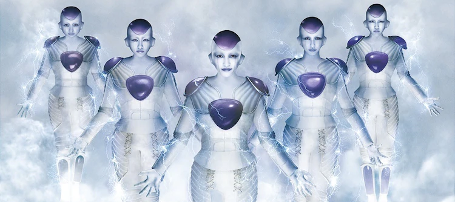
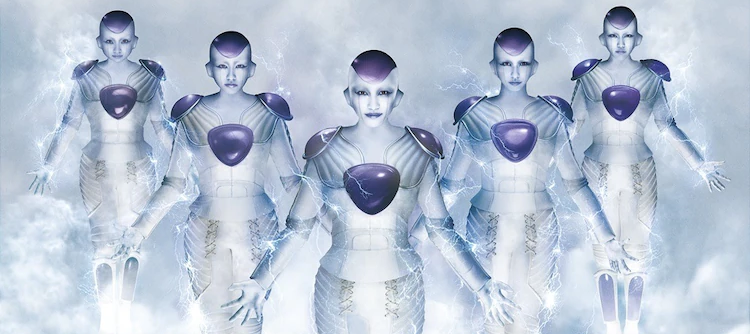
【『Z』的誓言（『Z』の誓い）】
作詞：森雪之丞 作曲：（特撮）NARASAKI 編曲：（特撮）NARASAKI、ゆよゆっぺ，為【七龍珠Z】動畫劇場版【七龍珠Z 復活的「F」】主題曲。
2015年2月與【野沢雅子】共同舉辦記者會，隊長百田夏菜子扮演【超級賽亞人】，高城蕾妮扮演【克林】；2015年4月於【東京．新宿バルト9、東京・TOHOシネマズ新宿】首映與見面會；於【東京．SHIBUYA TSUTAYA】賽亞人宇宙船展示宣傳，聯動節目【CS東映チャンネル「シネマ☆チョップ！」】。
2015年【七龍珠Z 復活的「F」】DVD與BD發行，特典含2015年2月與【野沢雅子】共同舉辦記者會；2015年4月於【東京．新宿バルト9、東京・TOHOシネマズ新宿】首映與見面會。
桃色幸運草Z參與配音演出
參與【七龍珠Z】動畫劇場【七龍珠Z 復活的「F」】的【天使】配音演出。
弗利沙（フリーザ）
愚人節時推出官網限時【弗利沙】入侵，5人亦完全【弗利沙】化與惡搞彩蛋。
2015年4月～2015年5月


【桃草 × comico（ももクロ × comico）】
與comico漫畫網站合作，邀請導演【本広克行】，並且【Chai Maxx ZERO】為其廣告曲。
抽獎獎項包含【オリジナルQUOカード】，聯動活動【桃色聖誕 2014 埼玉超級競技場大會 ～Shining Snow Story～（ももいろクリスマス 2014 さいたまスーパーアリーナ大会 ～Shining Snow Story～）】與聯動節目【フジテレビNEXT「坂崎幸之助的桃色民歌村NEXT（坂崎幸之助のももいろフォーク村NEXT）」】參加入場券抽獎。
2014年8月～2015年1月
佐佐木彩夏參與配音演出
參與【聖鬥士星矢】動畫劇場【聖鬥士星矢 LEGEND of SANCTUARY】的【（アテナ）城戸沙織】配音演出。
2014年4月舉辦公開錄音宣傳活動，2014年6月與7月於【東京．新宿バルト9】首映與見面會，其中7月那場變換劇中短髮姿態登場。
2014年【聖鬥士星矢 LEGEND of SANCTUARY】DVD、BD、BD-BOX發行。
2014年6月～2014年7月

【集英社 春之桃草祭典（集英社 春のももクロまつり）】
購買雜誌【週刊ヤングジャンプ No.21．22】【Seventeen 6月号】【マーガレット No.11】【週刊プレイボーイ No.20】【MEN'S NON-NO 6月号】參加2013年8月演唱活動【桃草夏季犯蠢主題樂園 WORLD SUMMER DIVE 2013.8.4 日產體育場大會（ももクロ夏のバカ騒ぎ WORLD SUMMER DIVE 2013.8.4 日産スタジアム大会）】入場券抽獎。
並於【東京．集英社】舉辦【集英社 春之桃草祭典MUSEUM開跑（集英社 春のももクロまつりMUSEUM開催）】展覽。
2013年4月～2013年5月


【桃色幸運草Z × 人造人009（ももいろクローバーZ × サイボーグ009）】
【手塚治虫 × 石ノ森章太郎 マンガのちから】活動宣傳合作企劃。
百田夏菜子飾演【島村ジョー（009）】、玉井詩織飾演【イワン．ウイスキー（001）】、佐佐木彩夏飾演【ジェット．リンク（002）】、高城蕾妮飾演【張々湖（006）】、有安杏果飾演【アルベルト．ハインリヒ（004）】。
2013年6月～2014年3月

【5TH DIMENSION】
合作漫畫家【横田卓馬】，以桃草【5TH DIMENSION】8首新曲為設定的作品，於【週刊ヤングマガジン】發行。
包含曲目【Neo STARGATE】【假想反烏托邦（仮想ディストピア）】【宇宙翱翔吧！包廂列車（宙飛ぶ！お座敷列車）】【銀月紙飛船（月と銀紙飛行船）】【地球生存物語 -Carpe diem-（上球物語 -Carpe diem-）】【Z女戰爭（Z女戦争）】【再會吧、那些愛憐的悲傷（サラバ、愛しき悲しみたちよ）】【BIRTH Ø BIRTH】。
2013年4月～2013年5月


【猛烈宇宙交響曲．第七樂章「無限的愛」（猛烈宇宙交響曲．第七楽章「無限の愛」）】
作詞．作曲．編曲：前山田健一，動畫【猛烈宇宙海賊】主題曲，以及2014年配信限定Emperor Style版本，改由傳奇吉他手【Yngwie Johann Malmsteen】參戰，為【猛烈宇宙海賊】動畫劇場版【猛烈宇宙海賊 ABYSS OF HYPERSPACE -超空間的深淵-】主題曲。
2011年舉辦【「猛烈宇宙海賊」特別先行上映イベント会見】聯動書報【ミニスカ&モーレツ宇宙海賊公式ファンブック】。
宣傳服裝邀請動畫【新世紀福音戰士】系列動畫師【貞本義行】設計。
【LOST CHILD】
作詞：岩里祐穂 作曲．編曲：（特撮）NARASAKI，動畫【猛烈宇宙海賊】片尾曲。
桃色幸運草Z參與配音演出
2012年5月參與第21集【決戦！ネビュラカップ】的【出場選手們】配音。
2012年1月～2014年2月
百田夏菜子參與戲劇演出
2016年5月記者會發表；7月記者會百田夏菜子劇情丈夫邀請【田中要次】參與演出；10月於【兵庫．神戸ポートタワー】開演宣傳，於【東京．NHKスタジオパーク、兵庫．三宮ゼロゲート】舉辦展覽，節目【NHK「うたコン」】桃色幸運草Z登場一同宣傳，於【大阪．NHK大阪ホール】舉辦活動【べっぴんさんプレミアムトーク】宣傳；12月於【兵庫．甲南女子大学】節目【NHK「土曜スタジオパーク」】公開收錄宣傳；2017年2月於【大阪．成田山大阪別院明王院】舉辦活動【平成29年 成田山節分祭】宣傳，3月於【愛知．NHK文化センター】舉辦活動【「べっぴんさん」の打ち明け話】宣傳。
聯動節目【NHK「もうすぐ！連続テレビ小説「べっぴんさん」」「10分で連続テレビ小説「べっぴんさん」メイキング」「いよいよスタート！連続テレビ小説「べっぴんさん」スペシャル」「まだ間に合う！連続テレビ小説「べっぴんさん」」「ぐるっと関西おひるまえ」「お正月だよ！べっぴんさん ～キアリス大集合～」】；聯動書報【連続テレビ小説 べっぴんさん】；【連続テレビ小説 べっぴんさん Memorial】郵票宣傳。
2017年獲得【AVON】舉辦的【エイボン女性年度賞 2016】中的【芸術賞】，百田夏菜子並於【東京．都内某所】參與受獎。
2016年10月～2017年4月
桃色幸運草Z參與舞台劇演出
於【大阪．なんばグランド花月】演出單元【すち子のカウンセリングにかけろ！】，與桃草武士【笑福亭鶴瓶】合作亂入客串，玩了【奶頭鑽頭】橋段，聯動節目【関西テレビ「桃色鶴瓶 ～下面一位～（桃色つるべ ～お次の方どうぞ～）」】。
2015年5月
桃色幸運草Z主演舞台劇
導演【本広克行】，含官方小冊子，2015年4月舉辦公開彩排與記者會，聯動書報【平田オリザ（文藝別冊）】內含腳本介紹。
2016年2月於【香川．イオンシネマ綾川】活動【さぬき映画祭 2016】紀錄片上映。
2017年【帷幕升起（幕が上がる）】DVD與BD發行。
2015年5月
桃色幸運草Z主演電影
作詞：桑原永江 作曲：しほり 編曲：冨田恵一，主題曲【青春賦】。
作詞：久保田洋司 作曲：ツキダタダシ 編曲：近藤研二，主題曲【春去春來（行く春来る春）】。
作詞：只野菜摘 作曲：小川コータ 編曲：生田真心，主題曲【Link Link】。
導演【本広克行】，含電影（紀錄片）【帷幕升起之前。女孩們僅在一個夏季所面臨的挑戰（幕が上がる、その前に。彼女たちのひと夏の挑戦）】2015年3月上映，導演【本広克行】；含電影（宣傳片）【初遇桃草（はじめてのももクロ）】2015年3月上映，節目宣傳【テレビ埼玉、岐阜放送、KBS京都、千葉テレビ、BS11、とちぎテレビ、仙台放送、九州朝日放送、テレビ和歌山、テレビ神奈川、三重テレビ、北海道文化放送、テレビ静岡、福井テレビ、南日本放送、CBCテレビ、スペースシャワーTV】與官方【YouTube】【Ustream】精華版。
2014年11月【Ustream】直播開始宣傳，聯動節目【関西テレビ「めざせ甲子園！つかたこレインボーロード」】【北海道テレビ「ワクワク、はじまる。」】【CS日本映画専門チャンネル「電影「帷幕升起」公開紀念原創節目「桃色演出論」（映画「幕が上がる」公開記念オリジナル番組「ももいろ演出論」）」】【フジテレビ「充滿熱情的電影「帷幕升起」！（映画「幕が上がる」のここが熱い！）」】【スカパー！「「走向全國！」桃草徒步全國的帷幕升起（「行くぞ、全国！」ももクロ全国行脚の幕が上がる）」「「來了！讚岐！」桃草讚岐電影節的帷幕升起（「来たよ！さぬき！」ももクロさぬき映画祭の幕が上がる）」 「傳遞桃草的努力！走向全國！127場電影院見面會（ももクロの本気届けます！行くぞ全国！127館舞台挨拶）」「出動！127場！桃草徒步全國電影院見面會最終章（行ったぞ！127館！ももクロ舞台挨拶全国行脚フィナーレ）」】與【Ustream「桃草一元復始大概24時間SP「心想事成♡」（ももクロ初夢ほぼ24時間SP「一富士二タカさんはなすび♡」）」】前導片與劇中舞台劇【銀河鉄道の夜】，節目宣傳【日本テレビ「PON！」】【フジテレビ「めざましテレビ」】【朝日放送「おはようコールABC」】【静岡朝日テレビ「とびっきり！しずおか」】【テレビ静岡「情報ワイド てっぺん静岡」】【読売テレビ「朝生ワイド す．またん！」】 ，聯動書報【帷幕升起（幕が上がる）】書套與電影小說版封面拍攝版本之一。
【静岡県立富士ケ丘高等学校 演劇部】成員包含：【沙織（さおり）】部長三年級【高橋さおり】百田夏菜子、【裕子（ユッコ）】三年級【橋爪裕子】玉井詩織、【明美醬（明美ちゃん）】二年級【加藤明美】佐佐木彩夏、【GARURU（がるる）】三年級【西条美紀】高城蕾妮、【中西同學（中西さん）】轉學生三年級【中西悦子】有安杏果。
【米久】合作企劃【米久 × 帷幕升起（yonekyu × 幕が上がる）】；【日本映画専門チャンネル】合作企劃【帷幕升起 × 日本（幕が上がる × 日本映画専門チャンネル）】，全13種15秒宣傳短片；合作企劃【岳南鉄道線】的【帷幕升起號（幕が上がる号）】與車票；合作企劃【都営地下鉄大江戸線】於【東京．六本木駅】電子廣告看板；【読売新聞】合作企劃【「帷幕升起」× 桃色幸運草Z（「幕が上がる」× ももいろクローバーZ）】各成員等身大宣傳廣告頁 ；【T．JOY】合作企劃【電影院嚴選菜單 × 帷幕升起「弱小話劇社的獎勵冰品」（映画館が本気で考えたメニュー × 幕が上がる「弱小演劇部のご褒美フローズン」）】冰品與杯墊；【AEON MALL】合作企劃【AEON MALL × 帷幕升起（AEON MALL × 幕が上がる）】。
2015年1月其中一場於【東京．新宿バルト9】試映會；2月於【静岡．プラサヴェルデ】聯動活動【ふじのくに映画フェア】試映會、【全国．劇場】先行上映、女子高校生限定試映會、於【香川．イオンシネマ高松東】舉辦【不認識桃色幸運草Z的桃草新人講座（ももいろクローバーZをよく知らない人のためのももクロ初心者講座）】，由【本広克行】【矢崎隼人】參與桃草話題 、於【香川．県民ホール】舉辦【「來了！讚岐！」桃草讚岐電影節的帷幕升起（「来たよ！さぬき！」ももクロさぬき映画祭の幕が上がる）】會員限定演唱活動、並於【香川．イオンシネマ綾川】活動【さぬき映画祭 2015】上映；2、3、4月【全国．映画館】共127場見面會，高城蕾妮於【福井．鯖江市】見面會戴上眼鏡與市長合作宣傳，於【福岡．博多駅】宣傳造勢，含【Ustream】直播，聯動廣播【女川さいがいFM「おながわ☆なう」】、於【東京．都内各地】舉辦寫真展宣傳（100張） ；8月百田夏菜子與高城蕾妮於【北海道．大黒座】見面會。
2015年3月於【東京．タワーレコード渋谷店、東京．タワーレコード新宿店、東京．SHIBUYA TSUTAYA、東京．山野楽器銀座本店、東京．ららぽーと豊洲】舉辦【電影「帷幕升起」衣裝展（映画「幕が上がる」衣装展）】展覽。
2015年4月於【義大利．烏迪內】活動【Udine Far East Film Festival 2015】上映；6月高城蕾妮參與於【兵庫．OSシネマズミント神戸】活動【神戸三宮映画祭 2015】上映，含【YouTube】直播；9月高城蕾妮參與於【宮城．せんだいメディアテーク】活動【仙台短篇映画祭 2015】上映；11月百田夏菜子參與於【東京．多摩市立関戸公民館】舉辦【第25回 映画祭 TAMA CINEMA FORUM】上映，含【Ustream】直播；2016年2月於【香川．イオンシネマ綾川】活動【さぬき映画祭 2016】紀錄片上映，含【Ustream】直播；2016年3月於【東京．新文芸坐】活動【気になる日本映画達＜アイツラ＞2015】上映，於【北海道．札幌プラザ2．5】活動【日本映画の変革者 -制作会社ROBOTの挑戦-】上映；2016年5月有安杏果參與於【埼玉．富士見市民文化会館キラリ☆ふじみ】活動【富士見市PR大使】上映 ；2016年6月百田夏菜子參與於【山口．シーモール】活動【海峡映画祭 2016】上映，10月於【美國．芝加哥．Wilmette Theatre】活動【Asian Pop-Up Cinema Season III】上映，11月於【岡山．岡山県天神山文化プラザ】活動【岡山映画祭 2016】上映；2017年1月高城蕾妮與有安杏果參與於【岡山．奈義町文化センター】舉辦【「岡山県奈義町教育．文化まちづくり監」就任】上映，2月於【静岡．静岡東宝会館】活動【ふじのくに映画祭 2017】上映，3月百田夏菜子參與於【広島．シネマ尾道】活動【第1回 尾道映画祭】上映，10月於【東京．YEBISU GARDEN CINEMA】活動【恵比寿文化祭 2017】上映。
2015年獲得【スポーツ報知】舉辦的【第40回 報知映画賞】中的【特別賞】，並於【東京．ザ．プリンス パークタワー東京】受獎，同時為史上第一組以團體得獎；2016年獲得【毎日新聞社】舉辦的【第70回 毎日映画コンクール】中的【TSUTAYA映画ファン賞 日本映画部門】，並於【神奈川．ミューザ川崎シンフォニーホール】受獎；亦獲得【日本アカデミー賞協会】舉辦的【第39回 日本アカデミー賞】中的【話題賞 俳優部門】，並於【東京．グランドプリンスホテル新高輪】受獎，聯動節目【日本テレビ「日本アカデミー賞授賞式」】。
2015年【「帷幕升起」原聲帶（「幕が上がる」オリジナルサウンドトラック）】發行，2015年【帷幕升起（幕が上がる）】【帷幕升起之前。女孩們僅在一個夏季所面臨的挑戰（幕が上がる、その前に。彼女たちのひと夏の挑戦）】DVD與BD發行，7月與8月於各地書店舉辦衣裝展宣傳，8月於【静岡．TSUTAYA富士本吉原店】舉辦劇組便當活動宣傳。
2015年2月～2015年8月

 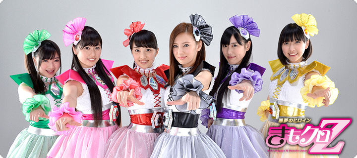
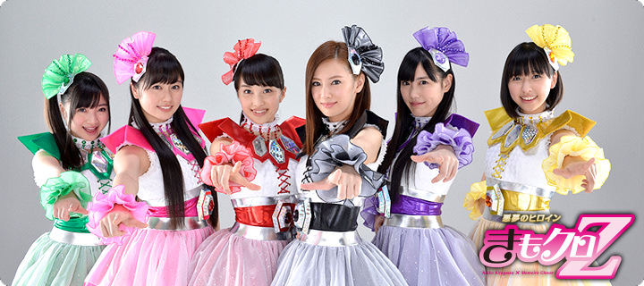

【哭泣也無所謂喔（泣いてもいいんだよ）】
作詞．作曲：中島みゆき 編曲：瀬尾一三，電影【悪夢ちゃん The 夢ovie】主題曲。
2014年3月星塵大姐頭【北川景子】黑色加入桃草組成【詭異桃草（きもクロ）】合作演出宣傳，於【東京．東京国際フォーラム】試映會；2014年4月於【東京．日本テレビ】邀請100位小中學生與【詭異桃草（きもクロ）】上課與合作曲目【再會吧、那些愛憐的悲傷（サラバ、愛しき悲しみたちよ）】舉辦活動【映画「悪夢ちゃん The 夢ovie」スペシャルイベント】宣傳。
節目宣傳【日本テレビ「Oha！4」「ZIP！」「PON！」「news every.」「キユーピー3分クッキング」】，聯動節目【日本テレビ「悪夢ちゃん深夜の補習授業！」「GW我的學生是惡夢祭典！北川景子&桃草史無前例宣傳就在日本電視台SP（GWは悪夢ちゃん祭り！北川景子&ももクロが前代未聞の日テレジャックしちゃうぞSP）」】，聯動活動【詭異桃草「再會吧、那些愛憐的悲傷 ～偶像ver.～」（きもクロ「サラバ、愛しき悲しみたちよ ～アイドルver.～」）】PV。
桃色幸運草Z參與戲劇演出
2014年戲劇【悪夢ちゃん スペシャル】聯動電影【悪夢ちゃん The 夢ovie】宣傳特別飾演【霜月女子學院】高校生：學生會長的玉井詩織與舞蹈社的百田夏菜子、佐佐木彩夏、高城蕾妮、有安杏果，邀請星塵大姐頭【北川景子】黑色加入桃草組成【詭異桃草（きもクロ）】合作演出。
聯動書報【悪夢ちゃん 夢のつづき編】封面拍攝之一宣傳，聯動活動【詭異桃草「再會吧、那些愛憐的悲傷 ～制服ver.～」（きもクロ「サラバ、愛しき悲しみたちよ ～制服ver.～」）】PV。
2014年【悪夢ちゃん スペシャル】DVD與BD發行，特典含12月聯動節目【日本テレビ「GW我的學生是惡夢祭典！北川景子&桃草史無前例宣傳就在日本電視台SP（GWは悪夢ちゃん祭り！北川景子&ももクロが前代未聞の日テレジャックしちゃうぞSP）」】與聯動活動【詭異桃草「再會吧、那些愛憐的悲傷 ～制服ver.～」（きもクロ「サラバ、愛しき悲しみたちよ ～制服ver.～」）】【詭異桃草「再會吧、那些愛憐的悲傷 ～偶像ver.～」（きもクロ「サラバ、愛しき悲しみたちよ ～アイドルver.～」）】PV。
【再會吧、那些愛憐的悲傷（サラバ、愛しき悲しみたちよ）】
作詞：岩里祐穂 作曲．編曲：（前BOØWY）布袋寅泰，戲劇【悪夢ちゃん】主題曲。
2012年10月亂入星塵大姐頭【北川景子】與【GACKT】【優香】【木村真那月】【小日向文世】【（ますだおかだ）岡田圭右】記者會，並公開主題曲。
聯動節目【日本テレビ「桃色幸運草Z緊急特別節目！桃草想在日本電視台搞事！？SP（ももいろクローバーZ緊急特番！ももクロが日テレで何かやらかすらしいぞ！？SP）」】，同時玉井詩織2012年10月亂入記者會又遲到（加上2012年9月【TAKARA TOMY】玩具【Furby】廣告記者會睡過頭），以剃眉妝登場。
玉井詩織參與配音演出
戲劇【悪夢ちゃん】與電影【悪夢ちゃん The 夢ovie】的【夢獣】配音演出。
2012年10月～2014年5月

桃色幸運草Z主演戲劇，【JUMP！！！！！】【TwinkleWink】
作詞：只野菜摘、今井雅子 作曲．編曲：横山克，主題曲【JUMP！！！！！】。
作詞：今井雅子 作曲．編曲：ツキダタダシ，插入曲【TwinkleWink】。
導演桃草武士【三鬼一希】，由【NHK】播放加入桃草成長經歷元素的奇幻劇，讓桃草武士能夠在劇中找到不少彩蛋。
【Twinkle5】成員包含：凡間天使【カナエ】（帶有實現之意）百田夏菜子、組合中打零工的【咪喵（ミーニャ）】黃色天使【川添美奈】玉井詩織、組合中芭蕾助教的【Nono（のんのん）】粉色天使【小野春乃】佐佐木彩夏、組合中炸機店【チキ★チキ】店員的【洛姬（ドッキー）】紫色天使【五十嵐弥生】高城蕾妮、組合中高校生的【小梨子（リコピー）】綠色天使【原江梨子】有安杏果、離職組合的前成員【柚子玲（ゆずりん）】紅色天使【阿部柚希】飛鳥凛。
2013年12月舉辦試映與記者會，2014年【天使JUMP（天使とジャンプ）】DVD與BD發行，特典含【天使JUMP！桃草大檢討會！（天使とジャンプ！ももクロ大反省会！）】【桃草貼身採訪！16DAYS（ももクロ完全密着！16DAYS）】；2014年【天使JUMP 原聲帶（天使とジャンプ オリジナルサウンドトラック）】發行，另外【JUMP！！！！！】【TwinkleWink】由【iTunes Store】【レコチョク】2013年先行配信。
2013年12月


【地球生存物語 -Carpe diem-（上球物語 -Carpe diem-）】
【地球生存物語 -Carpe diem-（上球物語 -Carpe diem-）】作詞：zopp 作曲．編曲：横山克，表演【WALKING WITH DINOSAURS】主題曲。
2013年4月舉辦記者會擔任官方應援隊【恐龍應援隊（ダイナソーサポーター）】，特別於【桃草春季幹大事 2013 西武巨蛋大會 ～繼承星星的桃子vol.1 Peach for the Stars～（春の一大事 2013 西武ドーム大会 ～星を継ぐももvol.1 Peach for the Stars～）】演唱活動再次舉辦宣傳記者會。
聯動節目【フジテレビ「桃色恐龍Z（ももいろダイナソーZ）」】，其中高城蕾妮外景拜訪桃草武士【所十三】；2013年5月節目宣傳【フジテレビ「めざましテレビ」】，高城蕾妮特別遠征【英國】；2013年6月節目宣傳【フジテレビ「めざましテレビ」】，分別【長野美鄉】合作氣象與單元【めざましじゃんけん】宣傳。
2013年7月～2013年8月

【We are UFI！！！】
作詞．作曲．編曲：前山田健一，戲劇【ウレロ☆未完成少女】主題曲。
UFI表示【Unidentified Fantastic Idol】，【未確認少女隊UFI】成員包含：笨蛋且責任感重的隊長【阿桃（ももりん）】百田夏菜子、大胃王【小玉（たまちゃん）】玉井詩織、不畏戀愛的【莎亞（さーや）】佐佐木彩夏、實際長得像猩猩的公關小姐艾莉娜【猩娜（ゴリナ）】高城蕾妮、美國底特律出身且英日雙語的【凱薩琳（キャサリン）】有安杏果、社交恐懼症的【X小姐（ミスX）】（未登場設定）。
【還可以 is the Best（ベター is the Best）】
作詞．作曲．編曲：前山田健一，戲劇【ウレロ☆未完成少女】主題曲。
UFI表示【Unidentified Fantastic Idol】，【未確認少女隊UFI】成員包含：笨蛋且責任感重的隊長【阿桃（ももりん）】百田夏菜子、大胃王【小玉（たまちゃん）】玉井詩織、不畏戀愛的【莎亞（さーや）】佐佐木彩夏、實際長得像猩猩的公關小姐艾莉娜【猩娜（ゴリナ）】高城蕾妮、美國底特律出身且英日雙語的【凱薩琳（キャサリン）】有安杏果、社交恐懼症的【X小姐（ミスX）】（未登場設定）。
2012年於【東京．日本武道館】舉辦【桃草女子祭典 2012 -Girl's Imagination-（ももクロ女祭り 2012 -Girl's Imagination-）】聯動戲劇【テレビ東京「ウレロ☆未完成少女」】與聯動節目【ニコニコ生放送「劇団ひとり、バカリズム、東京03と一緒に『ウレロ☆未完成少女』最終回を見よう！」】的【未確認少女隊UFI】，與劇中【＠川島プロダクション】成員【劇団ひとり】【バカリズム】【東京03】合作。
2012年【ウレロ☆未完成少女】DVD-BOX與BD-BOX發行，特典含2012年10月於【東京．日本武道館】舉辦【桃草女子祭典 2012 -Girl's Imagination-（ももクロ女祭り 2012 -Girl's Imagination-）】聯動戲劇【テレビ東京「ウレロ☆未完成少女」】的【未確認少女隊UFI】演唱活動、【還可以 is the Best（ベター is the Best）】陽春版PV。
2012年7月～2012年10月

【We are UFI！！！】
作詞．作曲．編曲：前山田健一，戲劇【ウレロ☆未確認少女】主題曲。
UFI表示【Unidentified Fantastic Idol】，【未確認少女隊UFI】成員包含：笨蛋且責任感重的隊長【阿桃（ももりん）】百田夏菜子、大胃王【小玉（たまちゃん）】玉井詩織、不畏戀愛的【莎亞（さーや）】佐佐木彩夏、實際長得像猩猩的公關小姐艾莉娜【猩娜（ゴリナ）】高城蕾妮、美國底特律出身且英日雙語的【凱薩琳（キャサリン）】有安杏果、社交恐懼症的【X小姐（ミスX）】（未登場設定）。
2011年於【東京．Zepp東京】舉辦【★帶靈魂的口號Tour（★魂のシュプレヒコールツアー）】聯動戲劇【テレビ東京「ウレロ☆未確認少女」】的【未確認少女隊UFI】演唱活動，邀請劇中【＠川島プロダクション】成員【劇団ひとり】【バカリズム】【東京03】合作。
聯動節目【ニコニコ生放送「『ウレロ☆未確認少女』をみんなで見よう！」】高城蕾妮登場。
2011年【ウレロ☆未確認少女 DVD号外版】DVD發行，2012年【ウレロ☆未確認少女】DVD-BOX發行，2014年【ウレロ☆未確認少女】BD-BOX發行，特典含2011年12月於【東京．Zepp東京】舉辦【★帶靈魂的口號Tour（★魂のシュプレヒコールツアー）】聯動戲劇【テレビ東京「ウレロ☆未確認少女」】的【未確認少女隊UFI】演唱活動、【We are UFI！！！】陽春版PV、另一首主題曲【ALONE】。
2011年10月～2011年12月


【桃草 × 職業摔角（ももクロ × プロレス）】
與【武藤敬司】【天龍源一郎】【飯伏幸太】【越中詩郎】與桃草武士【岩谷麻優】合作書報；2016年【桃色聖誕 2016 〜隆冬的燦爛夏日時光〜（ももいろクリスマス 2016 〜真冬のサンサンサマータイム〜）】演唱活動會場限定特別封面。
2016年11月～2017年12月
【WRESTLE KINGDOM 10 in 東京ドーム】
於【東京．東京ドーム】有安杏果登場，2015年12月桃色幸運草Z VTR登場亂入桃草武士【邪道】發表會，並決定派出有安杏果與桃草武士【邪道】合作參戰。
2016年【WRESTLE KINGDOM 10 in TOKYO DOME】DVD發行。
2016年1月
【STARDOM．紫雷伊歐 x 桃色幸運草Z（スターダム．紫雷イオ x ももいろクローバーZ）】
2015年於【静岡．小笠山総合運動公園エコパ】舉辦【桃色幸運草Z 桃神祭 2015 ECOPA體育場大會 ～額頭大神親臨～（ももいろクローバーZ 桃神祭 2015 エコパスタジアム大会 ～御額様ご来臨～）】【桃色幸運草Z 桃神祭 2015 ECOPA體育場大會 ～遠州大狂歡～（ももいろクローバーZ 桃神祭 2015 エコパスタジアム大会 ～遠州大騒儀～）】演唱活動合作企劃。
2015年7月

【日本 × アメリカ】
比賽節目宣傳。
2015年7月
【日本 × オーストラリア】
比賽節目宣傳。
2014年5月

【日本 × コロンビア】
比賽節目宣傳。
2014年6月
【日本 × オーストラリア】
比賽節目宣傳。
2013年5月


【富士見市制施行45周年記念事業】
2017年於【埼玉．富士見市第2運動公園】舉辦【桃草春季幹大事 2017 in 富士見市 ～笑顏的力量 思緒相連～（ももクロ春の一大事 2017 in 富士見市 ～笑顔のチカラ つなげるオモイ～）】演唱活動合作企劃。
2017年4月
【ウインターイルミネーション 2016-2017】
在【埼玉．東武動物公園】聖誕合作企劃，2016年12月專輯【MCZ WINTER SONG COLLECTION】宣傳。
2016年11月～2017年2月
【富士見市PR大使】
衣錦還鄉，有安杏果於【埼玉．富士見市民文化会館キラリ☆ふじみ】受獎，含2015年桃草電影【帷幕升起（幕が上がる）】上映。
2016年5月～2018年1月
【大分．別府市】宣傳
2016年11月於【大分．別府ビーコンプラザ】舉辦【心之旋律 ～feel a heartbeat～ Vol.0.5（ココロノセンリツ ～feel a heartbeat～ Vol.0.5）】有安杏果個人演唱活動宣傳，含各式週邊商品合作企劃。
2016年11月

【家康公四百年祭浜松部会イメージキャラクター】
衣錦還鄉，百田夏菜子擔任【第8回 家康楽市 in 浜松出世城「2015秋の陣」】活動形象代言人。
聯動書報【徳川家康公顕彰四百年記念事業浜松部会パンフレット】【徳川家康公顕彰四百年記念事業浜松部会記念誌】百田夏菜子擔任封面拍攝。
2015年10月【静岡．浜松城公園】百田夏菜子登場。
2015年4月～2015年10月


【特殊詐欺根絶 千住防犯のつどい「一日警察署長」】
由【東京都千住警察署】於【東京．千住警察署、東京．東京電機大学】舉辦，玉井詩織登場。
2017年10月
【秋の全国交通安全運動キャンペーン「一日警察署長」】
由【神奈川県戸部警察署】於【神奈川．MARK IS みなとみらい、神奈川．グランモール公園】舉辦，高城蕾妮登場。
2017年9月
【長野縣大町警察署安全．安心敦親睦鄰日 ～桃草阿玲鎮守北疆安全Z～「一日警察署長」（長野県大町警察署安全．安心ふれあいフェスティバル ～ももクロあーりん大北の安全を守るZ～「一日警察署長」）】
由【長野県大町警察署】於【長野．あずみ野池田クラフトパーク】舉辦，佐佐木彩夏登場。
2016年10月
【安全．安心まちづくり旬間出陣式 in 鎌倉「一日警察署長」】
由【神奈川県鎌倉警察署】於【神奈川．鎌倉警察署、神奈川．鶴岡八幡宮】舉辦，佐佐木彩夏登場。
2016年10月

 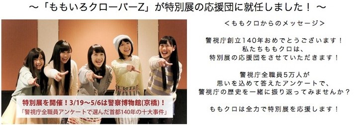
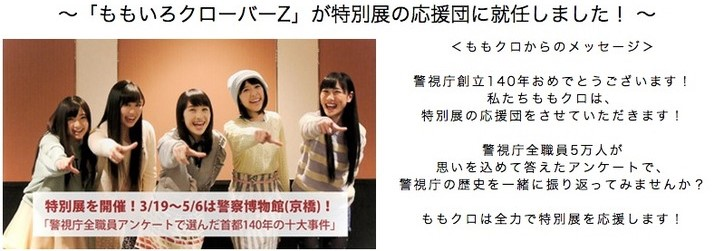

【駅．電車内における痴漢、暴力等の犯罪撲滅キャンペーン】
由【警視庁】於【東京．町田市民フォーラム】舉辦。
2016年12月
由【警視庁】於【東京．八王子市芸術文化会館】舉辦。
2016年12月
【被害遺児招待】邀請
2016年舉辦【桃神祭 2016 ～鬼島～（桃神祭 2016 ～鬼ヶ島～）】演唱活動合作。
2016年8月
2016年舉辦【桃色聖誕 2016 〜隆冬的燦爛夏日時光〜（ももいろクリスマス 2016 〜真冬のサンサンサマータイム〜）】演唱活動合作。
2016年12月
2017年舉辦【桃草夏季犯蠢主題樂園 2017 -FIVE THE COLOR Road to 2020- 味之素體育場大會（ももクロ夏のバカ騒ぎ 2017 -FIVE THE COLOR Road to 2020- 味の素スタジアム大会）】演唱活動合作。
2017年8月
【警視庁創立140年記念特別展】
擔任官方應援隊，由【警視庁】於【東京．警察博物館】舉辦。
2014年8月於【東京．新宿文化センター】舉辦演唱活動。
2014年3月～2014年8月


【阿玲與詩織試乘初體驗 feat.高城蕾妮（あーりんとしおりんのはじめての試乗体験 feat.高城れに）】
玉井詩織、佐佐木彩夏、高城蕾妮合作企劃。
2017年9月～2017年10月
【大試乗カーニバル】
2016年5月～2016年8月
【玉井詩織令人興奮的踏上駕駛之道（玉井詩織のワクワクドライブへの道）】
玉井詩織考取駕照記錄合作企劃。
【阿玲妄想的駕駛人生（あーりんの妄想カーライフ）】
佐佐木彩夏考取駕照記錄合作企劃，與【（東京03）飯塚悟志】與畫師【ニイルセン】合作以漫畫方式定格動畫呈現。
2016年4月～2017年4月
【西へ、東へ、ペンギン村キャラバン！】
演唱合作企劃，特別來賓包含【水森亜土】，【水森亜土】合作曲目【ワイワイワールド】。
2015年6月～2015年7月
【桃草夏季犯蠢主題樂園 2017 -FIVE THE COLOR Road to 2020- 味之素體育場大會（ももクロ夏のバカ騒ぎ 2017 -FIVE THE COLOR Road to 2020- 味の素スタジアム大会）】
在【京王線】電車廣告的演唱活動宣傳合作企劃。
2017年6月
【鉄道フェスタ】
於【東京．東武百貨店】舉辦展覽，2017年4月合作企劃【富士見市制施行45週年 東武東上線桃草登場Z（富士見市制施行45周年 東武東上線にももクロが登場だZ）】包含電車【桃草號（ももクロ号）】標誌、【埼玉．ふじみ野駅】改名【桃色幸運草Z車站（ももいろクローバーZ駅）】看板、徽章宣傳。
2017年6月

【桃草夏季犯蠢主題樂園 2017 -FIVE THE COLOR Road to 2020- 味之素體育場大會（ももクロ夏のバカ騒ぎ 2017 -FIVE THE COLOR Road to 2020- 味の素スタジアム大会）】
在【東京．新宿駅】廣告的演唱活動宣傳合作企劃。
2017年6月

【MOMOIRO CLOVER Z DOME TREK 2016 "AMARANTHUS / 白金的黎明"（MOMOIRO CLOVER Z DOME TREK 2016 "AMARANTHUS / 白金の夜明け"）】
在【福岡．紫駅】宣傳合作企劃，當天高城蕾妮前往訪問，含【Ustream】直播，站名鑰匙圈同時販售。
2016年3月
【AMARANTHUS】【白金的黎明（白金の夜明け）】
【每日列車 西鐵電車Z！（毎日トレイン にしてつ電車だZ！）】
在【西日本鉄道】路線廣告與車內廣播的專輯宣傳合作企劃，車內廣播由百田夏菜子於【福岡．大橋駅】，玉井詩織於【福岡．福岡（天神）駅】，佐佐木彩夏於【福岡．小郡駅】，高城蕾妮於【福岡．二日市駅】，有安杏果於【福岡．久留米駅】進行。
2016年3月～2016年5月
【桃草女子祭典 2014 ～Ristorante da MCZ～（ももクロ女祭り 2014 ～Ristorante da MCZ～）】
在【京浜東北線】廣告的演唱活動DVD與BD宣傳合作企劃。
2015年8月～2015年9月
【桃草女子祭典 2014 ～Ristorante da MCZ～（ももクロ女祭り 2014 ～Ristorante da MCZ～）】
在【田園都市線】廣告的演唱活動DVD與BD宣傳合作企劃。
2015年8月～2015年9月

【哭泣也無所謂喔（泣いてもいいんだよ）】【桃色幸運草Z JAPAN TOUR 2013「五蘊」（ももいろクローバーZ JAPAN TOUR 2013「GOUNN」）】
在【山手線】廣告的單曲、演唱活動DVD與BD宣傳合作企劃。
2014年4月～2014年5月

【桃草的裝飾電車行駛中（ももクロのラッピング電車運行）】
配合購買雜誌參加2013年8月演唱活動【桃草夏季犯蠢主題樂園 WORLD SUMMER DIVE 2013.8.4 日產體育場大會（ももクロ夏のバカ騒ぎ WORLD SUMMER DIVE 2013.8.4 日産スタジアム大会）】入場券抽獎的【集英社 春之桃草祭典（集英社 春のももクロまつり）】合作企劃宣傳。
2013年4月～2013年5月

【多摩幸運Z（どーもクロZ）】
吉祥物【どーもくん】15週年生日紀念，網站【NHKオンデマンド】紙盒吉祥物設計圖合作企劃。
2013年12月

【CD單曲封面風格英雄化身卡（CDジャケット風ヒーローアバターカード）】
【七龍珠英雄】合作企劃，聯動活動【ドラゴンボールヒーローズゴッドツアー 2015】發放合作卡牌單曲【『Z』的誓言（『Z』の誓い）】宣傳。
2015年5月


【桃色幸運草Z版型（ももいろクローバーZ仕様）】
【WHITE HOT BLIZZARD MOMOIRO CHRISTMAS 2013 ～美麗的極寒世界～（WHITE HOT BLIZZARD MOMOIRO CHRISTMAS 2013 ～美しき極寒の世界～）】演唱活動宣傳合作企劃。
2013年12月

【桃草1個月內週末宣傳！！（ももクロ1ヶ月間週末ジャック！！）】
【桃草春季幹大事 2014 國立競技場大會 ～NEVER ENDING ADVENTURE 迎向夢想彼端～（ももクロ春の一大事 2014 国立競技場大会 ～NEVER ENDING ADVENTURE 夢の向こうへ～）】演唱活動、【AbemaTV 1st ANNIVERSARY LIVE】演唱活動直播、電影（宣傳片）【初遇桃草（はじめてのももクロ）】、節目【桃草Chan AbemaTV外傳（ももクロChan AbemaTVスピンオフ）】。
2017年4月
【"桃草7年史"&"最新桃草LIVE影片"一次上兩部！（"ももクロ7年の歴史"&"最新ももクロライブ映像"2本立て！）】
由【LINE LIVE】播放，介紹電影（宣傳片）【初遇桃草（はじめてのももクロ）】與【DOME TREK 2016 大型慶功大會 ～一同回顧影片～（DOME TREK 2016 大打ち上げ大会 ～映像と共にふりかえる～）】演唱活動。
2016年4月
 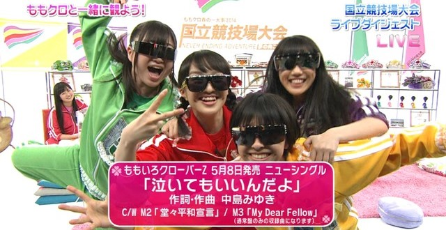
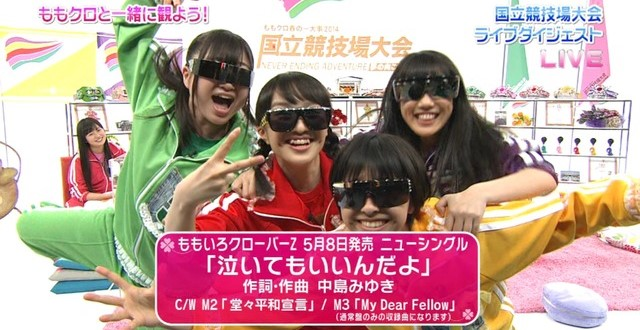


【桃色聖誕 2015 〜Beautiful Survivors〜 延長戰 大檢討會（ももいろクリスマス 2015 〜Beautiful Survivors〜 延長戦 大反省会）】
由【フジテレビNEXT】播放，介紹【桃色聖誕 2015 〜Beautiful Survivors〜（ももいろクリスマス 2015 〜Beautiful Survivors〜）】，聯動節目【フジテレビ「次ナルTV」】。
2016年1月
【桃色聖誕 2014 埼玉超級競技場大會 延長戰 大檢討會（ももいろクリスマス 2014 さいたまスーパーアリーナ大会 延長戦 大反省会）】
由【フジテレビNEXT】播放，介紹【桃色聖誕 2014 埼玉超級競技場大會 ～Shining Snow Story～（ももいろクリスマス 2014 さいたまスーパーアリーナ大会 ～Shining Snow Story～）】。
2015年1月
【「桃草春季幹大事 2014 國立競技場大會 ～NEVER ENDING ADVENTURE 迎向夢想彼端～」～桃草LIVE影片鑑賞暢談國立2days～（「ももクロ春の一大事 2014 国立競技場大会 ～NEVER ENDING ADVENTURE 夢の向こうへ～」～ももクロがライブ映像を観ながら語る国立2days～）】
由【CSフジテレビONE】播放，翻滾饒舌歡樂場，介紹【桃草春季幹大事 2014 國立競技場大會 ～NEVER ENDING ADVENTURE 迎向夢想彼端～（ももクロ春の一大事 2014 国立競技場大会 ～NEVER ENDING ADVENTURE 夢の向こうへ～）】。
2014年4月
【桃草的軌跡 2013 ～西武巨蛋、日産體育場、直到最新桃子聖誕～（ももクロの軌跡 2013 ～西武ドーム、日産スタジアム、最新ももクリまで～）】
由【フジテレビ】播放，特別以日職解說員角色主持：【関根さん】百田夏菜子、【玉井アナ】玉井詩織、【谷沢さん】佐佐木彩夏、【平松さん】高城蕾妮、【大矢さん】有安杏果。
介紹【桃草春季幹大事 2013 西武巨蛋大會 ～繼承星星的桃子vol.1&vol.2 Peach for the Stars～（春の一大事 2013 西武ドーム大会 ～星を継ぐももvol.1&vol.2 Peach for the Stars～）】【桃草夏季犯蠢主題樂園 WORLD SUMMER DIVE 2013.8.4 日產體育場大會（ももクロ夏のバカ騒ぎ WORLD SUMMER DIVE 2013.8.4 日産スタジアム大会）】【WHITE HOT BLIZZARD MOMOIRO CHRISTMAS 2013 ～美麗的極寒世界～（WHITE HOT BLIZZARD MOMOIRO CHRISTMAS 2013 ～美しき極寒の世界～）】。
2014年1月
【加碼桃色聖誕 2013！Party in ODAIBA（もうひとつの、ももいろクリスマス 2013！Party in ODAIBA）】
由【フジテレビNEXT】播放，邀請桃草武士【三宅正治】主持，【（THE ALFEE）坂崎幸之助】【武部聡志】【辛島美登里】【（THE ALFEE）高見沢俊彦】【広瀬香美】【西川貴教】【（前かぐや姫）伊勢正三】【加藤いづみ】與桃草武士【miwa】參與演出，【郷ひろみ】【（THE ALFEE）桜井賢】【Marty Friedman】電話登場。
由【スカパー！】播放，桃草LIVE宣傳【スカパー！「加碼桃色聖誕 2013！Party in ODAIBA 直播前特別節目 桃草LIVE列傳 ～momoclo evolution～（もうひとつの、ももいろクリスマス 2013！Party in ODAIBA 生放送直前特番 ももクロライブ列伝 ～momoclo evolution～）」】。
2013年12月
【秋季桃草祭典！！！桃草SP INTERVIEW（秋のももクロ祭り！！！ももクロスペシャルインタビュー！！！）】
由【フジテレビNEXT】播放，介紹【桃草春季幹大事 2013 西武巨蛋大會 ～繼承星星的桃子vol.1&vol.2 Peach for the Stars～（春の一大事 2013 西武ドーム大会 ～星を継ぐももvol.1&vol.2 Peach for the Stars～）】【桃草夏季犯蠢主題樂園 WORLD SUMMER DIVE 2013.8.4 日產體育場大會（ももクロ夏のバカ騒ぎ WORLD SUMMER DIVE 2013.8.4 日産スタジアム大会）】。
2013年10月
【巨蛋Tour 門票販售紀念 與2張專輯明年也一起上SP（ドームツアー チケット発売記念 アルバムも来年2枚同時にでちゃうよスペシャル）】
介紹【桃色幸運草Z JAPAN TOUR 2013「五蘊」（ももいろクローバーZ JAPAN TOUR 2013「GOUNN」）】演唱活動。
2015年12月

【「夏季桃草LIVE祭典」～滿滿女子會對話！幕後私底下也不容錯過SP～（「夏のももクロLIVE祭り」～女子会トーク満載！舞台裏も話しちゃうぞSP～）】
由【CSテレ朝チャンネル】播放，介紹【桃草女子祭典 2014 ～Ristorante da MCZ～（ももクロ女祭り 2014 ～Ristorante da MCZ～）】【俺のザ．ベストテン】演唱活動。
2015年7月


【「桃草春季幹大事 2014 國立競技場大會 ～NEVER ENDING ADVENTURE 迎向夢想彼端～」販售紀念 桃色幸運草Z 歷代LIVE History（「ももクロ春の一大事 2014 国立競技場大会 ～NEVER ENDING ADVENTURE 夢の向こうへ～」発売記念 ももいろクローバーZ 歴代ライブヒストリー）】
由【スペースシャワーTV】播放包含【桃草春季幹大事 2014 國立競技場大會 ～NEVER ENDING ADVENTURE 迎向夢想彼端～（ももクロ春の一大事 2014 国立競技場大会 ～NEVER ENDING ADVENTURE 夢の向こうへ～）】前的演唱活動。
2014年10月
【桃色幸運草Z LIVE Selection（ももいろクローバーZ ライブセレクション）】
由【スペースシャワーTV】播放【桃色幸運草Z JAPAN TOUR 2013「5TH DIMENSION」（ももいろクローバーZ JAPAN TOUR 2013「5TH DIMENSION」）】演唱活動。
2013年7月～2013年8月
【桃草怎麼會有5小時宣傳Z！SP（ももクロがまさかの5時間ジャックだZ！スペシャル）】
由【スペースシャワーTV Plus】播放。
聯動節目【スペースシャワーTV Plus「桃草5小時宣傳放送前！MUSIC VIDEO SP（ももクロ5時間ジャック放送直前！ミュージックビデオスペシャル）」】。
2013年4月
【桃色幸運草Z SP（ももいろクローバーZ スペシャル）】
由【スペースシャワーTV Plus】播放。
2011年7月
【桃色幸運草Z LIVE at SUMMER SONIC 2013（ももいろクローバーZ LIVE at サマソニ 2013）】
播放【SUMMER SONIC 2013】演唱活動。
2013年10月


【GO AHEAD！！】
伊倉愛美參與MV演出。
2008年10月


【NO MUSIC，NO IDOL？】
單曲【時尚櫻桃可人兒 / 玩咖漢堡小鮮肉（My Cherry Pie（小粋なチェリーパイ） / My Hamburger Boy（浮気なハンバーガーボーイ））】合作海報、餐點、杯墊。
2017年8月～2017年9月
【MONTHLY TOWER PUSH！！！】
專輯【AMARANTHUS】【白金的黎明（白金の夜明け）】合作企劃。
2016年2月
專輯【5TH DIMENSION】合作企劃。
2013年4月
【桃草文化祭（ももクロ文化祭）】
單曲【哭泣也無所謂喔（泣いてもいいんだよ）】合作企劃於【神奈川．タワーレコード横浜ビブレ店】，2014年5月高城蕾妮訪問。
2014年5月
單曲【GOUNN（五蘊）】合作企劃於【東京．タワーレコード渋谷店】，2013年11月高城蕾妮與有安杏果訪問。
2013年11月


【小桃草Z × HMV GW Kids活動（ももくろちゃんZ × HMV GWキッズキャンペーン）】
小桃草Z身份，聯動節目【Hulu「石頭剪刀布派對（ぐーちょきぱーてぃー）」】。
2017年4月～2017年5月
【桃色幸運草Z × HMV 桃色聖誕活動（ももいろクローバーZ × HMV ももいろクリスマスキャンペーン）】
聖誕節活動，6種【桃子聖誕CD保護套（ももクリCDケース）】。
2012年11月～2012年12月


【出動！AEON MALL的黃金週！黃金週Z（行くぜっ！GWのイオンモール！GWだZ）】
桃色幸運草Z參與AEON MALL黃金週特賣宣傳。
【DO MALL！暑假Z！（DO MALL！夏休みだZ！）】
桃色幸運草Z參與AEON MALL特賣宣傳。
2015年4月～2015年8月
【桃色幸運草Z蒞臨AEON MALL沖縄Rycom！（イオンモール沖縄ライカムにももいろクローバーZがやってくる！）】
2015年合作企劃【AEON MALL × 帷幕升起（AEON MALL × 幕が上がる）】學生限定參加入場券抽獎。
【AEON MALL × 帷幕升起（AEON MALL × 幕が上がる）】
桃色幸運草Z參與AEON MALL廣告宣傳，聯動電影【帷幕升起（幕が上がる）】宣傳，於【千葉．イオンモール幕張新都心】舉辦【出動！春季AEON MALL DO MALL！SPRING Z（行くぜっ！春のイオンモール DO MALL！SPRINGだZ）】見面會。
AEON MALL聯動活動【桃色幸運草Z蒞臨AEON MALL沖縄Rycom！（イオンモール沖縄ライカムにももいろクローバーZがやってくる！）】學生限定參加入場券抽獎。
2015年3月～2015年8月
【ビッグエコー うたゴコロキャンペーン】
單曲【『Z』的誓言（『Z』の誓い）】宣傳合作企劃，抽獎獎項包含【桃草 簽名麥克風（ももクロ サイン入りマイク）】【桃草 原創卡拉OK會員卡（ももクロ オリジナルカラオケパスポート）】等，聯動活動【桃色幸運草Z 桃神祭 2015 ECOPA體育場大會 ～額頭大神親臨～（ももいろクローバーZ 桃神祭 2015 エコパスタジアム大会 ～御額様ご来臨～）】【桃色幸運草Z 桃神祭 2015 ECOPA體育場大會 ～遠州大狂歡～（ももいろクローバーZ 桃神祭 2015 エコパスタジアム大会 ～遠州大騒儀～）】參加入場券抽獎。
2015年4月～2015年6月

【FamilyMart之夏 × 桃草之夏 與"全力"講究的「桃色幸運草Z」共同開發（ファミマの夏 × ももクロの夏 "全力"でこだわった「ももいろクローバーZ」共同開発）】
FamilyMart三款便當合作企劃【桃草的個人便當（ももクロのわがまま弁当）】【詩織的真飽便當（しおりんのまんぷく弁当）】【桃草流 素麺（ももクロ流 そうめん）】，同月舉辦記者會與【FamilyMart】社長【中山勇】一同發表。
其中【桃草流 素麺（ももクロ流 そうめん）】包裝為比基尼（剪接）版。
【FamilyMart之夏 × 桃草之夏「甜蜜閃亮 夏季祭典活動」（ファミマの夏 × ももクロの夏「ラブラブギラギラ 夏祭りキャンペーン」）】
2013年7月～2013年8月
【萬聖節樂透彩抽獎會場&桃草特別LIVE（ハロウィンジャンボ抽選会&ももクロ特別ライブ）】
2017年合作企劃購買樂透彩【ハロウィンジャンボ宝くじ】參加入場券抽獎。
2017年11月
【ハロウィンジャンボ宝くじ ハッピーハロウィンキャンペーン】
購買樂透彩【ハロウィンジャンボ宝くじ】參加2017年11月於【東京．豊洲PIT】舉辦【萬聖節樂透彩抽獎會場&桃草特別LIVE（ハロウィンジャンボ抽選会&ももクロ特別ライブ）】入場券抽獎。
2017年10月

【參天 × 桃草 SECRET LIVE 60分鐘1回合對抗（サンテ × ももクロ シークレットライブ60分1本勝負）】
2014年合作企劃購買【參天製藥】眼藥水參加入場券抽獎。
【參天 × 桃草 日本來臨啦↑↑大作戰！（サンテ × ももクロ ニッポンきたぁ↑↑大作戦！）】
與參天製藥眼藥水合作，同月舉辦記者會。
購買參天製藥產品參加2015年1月於【東京．Zepp DiverCity】舉辦【參天 × 桃草 SECRET LIVE 60分鐘1回合對抗（サンテ × ももクロ シークレットライブ60分1本勝負）】入場券抽獎，其他抽獎獎項包含【參天 × 桃草 來臨啦↑↑襯衫（サンテ × ももクロ きたぁ↑↑シャツ）】【オリジナルQUOカード】等。
2014年7月～2015年1月
【ekuborn × THERMOS 酒窩大水壺（ekuborn × THERMOS えくぼの大きな水筒）】
百田夏菜子個人品牌【ekuborn】2017年演唱活動【桃草夏季犯蠢主題樂園 2017 -FIVE THE COLOR Road to 2020- 味之素體育場大會（ももクロ夏のバカ騒ぎ 2017 -FIVE THE COLOR Road to 2020- 味の素スタジアム大会）】合作企劃。
2017年8月
【ekuborn × THERMOS 隨行保溫瓶（ekuborn × THERMOS ケータイマグボトル）】
百田夏菜子個人品牌【ekuborn】2016年演唱活動【MOMOIRO CLOVER Z DOME TREK 2016 "AMARANTHUS / 白金的黎明"（MOMOIRO CLOVER Z DOME TREK 2016 "AMARANTHUS / 白金の夜明け"）】合作企劃。
2016年4月

【主推色系！ SABAE × MCZ 太陽眼鏡合作（推しカラーはクッキリ！ SABAE × MCZ コラボサングラス）】
2015年於【福井．サンドーム福井】舉辦【番外！桃忍60分 眼鏡博覽 2015（番外！ももクノ60分 めがね博 2015）】演唱活動合作企劃。
2015年10月
【桃草 LOGO設計筷子（ももクロ ロゴ入りお箸）】
聯動節目【日本テレビ「桃草電視購物的玉手箱Z（ももクロポシュレの玉手箱だZ）」】，2015年第一彈：【北海道】名產與【五島軒】產品【カレンジャー スープセット】合作企劃（玉井詩織）特典送筷子。
2015年5月

【七龍珠Z × 桃色幸運草Z 明信片（ドラゴンボールZ × ももいろクローバーZ ポストカード）】
聯動電影【七龍珠Z 復活的「F」】宣傳，全國100萬人限定特典。
【桃色幸運草Z 特色明信片（ももいろクローバーZ 特製ポストカード）】
聯動電影【七龍珠Z 復活的「F」】宣傳，於【福岡．福岡ヤフオク！ドーム】舉辦【公式粉絲俱樂部「ANGEL EYES」限定活動「桃草咚打鼓祭典 2015 春 ～專業臨場感LIVE～」（公式ファンクラブ「ANGEL EYES」限定イベント「ももクロどんたく 2015 春 ～劇空間プロライブ～」）】演唱活動電影預售票附贈。
2015年4月～2015年5月


【「天使JUMP」特製明信片（「天使とジャンプ」特製ハガキ）】
聯動戲劇【NHK「天使JUMP（天使とジャンプ）」】宣傳。
2013年12月

【桃草 × 東芝 TransferJet合作活動（ももクロ × 東芝 TransferJetコラボキャンペーン）】
2016年於【神奈川．日産スタジアム】舉辦【桃神祭 2016 ～鬼島～（桃神祭 2016 ～鬼ヶ島～）】演唱活動合作企劃。
利用無線傳輸器與桃草特別動畫展示「TransferJet™」技術的抽獎活動。
2016年8月～2016年12月
【桃色幸運草Z SP MOVIE CARD DOME TREK 2016（ももいろクローバーZ スペシャルムービーカード DOME TREK 2016）】
2015年於【愛知．ナゴヤドーム、北海道．札幌ドーム、大阪．京セラドーム大阪、福岡．福岡ヤフオク！ドーム、埼玉．西武プリンスドーム】舉辦【MOMOIRO CLOVER Z DOME TREK 2016 "AMARANTHUS / 白金的黎明"（MOMOIRO CLOVER Z DOME TREK 2016 "AMARANTHUS / 白金の夜明け"）】演唱活動合作企劃。
利用無線傳輸器與桃草特別動畫展示「TransferJet™」技術的抽獎活動，另外合作【FamilyMart】。
2015年12月～2016年4月
【桃色幸運草Z × 東芝 TransferJet合作活動（ももいろクローバーZ × 東芝 TransferJetコラボキャンペーン）】
2015年於【群馬．軽井沢スノーパーク】舉辦【桃色聖誕 2015 〜Beautiful Survivors〜（ももいろクリスマス 2015 〜Beautiful Survivors〜）】演唱活動合作企劃。
利用無線傳輸器與桃草特別動畫展示「TransferJet™」技術的抽獎活動，另外合作【FamilyMart】於東京與大阪同步展示。
2015年12月～2016年2月
【桃草 × 東芝 桃神祭限定合作企劃！（ももクロ × 東芝 桃神祭限定コラボ企画！）】
2015年於【静岡．小笠山総合運動公園エコパ】舉辦【桃色幸運草Z 桃神祭 2015 ECOPA體育場大會 ～額頭大神親臨～（ももいろクローバーZ 桃神祭 2015 エコパスタジアム大会 ～御額様ご来臨～）】【桃色幸運草Z 桃神祭 2015 ECOPA體育場大會 ～遠州大狂歡～（ももいろクローバーZ 桃神祭 2015 エコパスタジアム大会 ～遠州大騒儀～）】演唱活動合作企劃。
利用無線傳輸器與【「初遇桃草」片尾花絮 -導演剪輯版-（「はじめてのももクロ」エンディング映像 -ディレクターズカット版-）】記憶卡展示「TransferJet™」技術。
2015年7月
【桃草 × CASIO BABY-G（ももクロ × CASIO BABY-G）】
聯動節目【日本テレビ「桃草電視購物的玉手箱Z（ももクロポシュレの玉手箱だZ）」】，2015年第一彈：【CASIO】產品【BABY-G】合作企劃（有安杏果）。
2015年5月
【原創防水手機背帶掛繩組（オリジナル防水ネックスマホケース）】
聯動節目【日本テレビ「桃草電視購物的玉手箱Z（ももクロポシュレの玉手箱だZ）」】，2015年第一彈：【CASIO】產品【BABY-G】合作企劃（有安杏果）特典送原創防水手機背帶掛繩組。
2015年5月